ชีทเรียน+แบบฝึกหัด · ติวเคมี สอวน. ค่าย 1 · สอนสลับฝึกทีละช่วง
หลักคิดข้อเดียวที่อยู่เบื้องหลังทุกพันธะ: ระบบจะเสถียรขึ้นเมื่อพลังงานต่ำลง อะตอมเดี่ยวส่วนใหญ่มีเวเลนซ์อิเล็กตรอนไม่ครบ 8 (ไม่เหมือนแก๊สมีสกุล) จึงหาทาง "จัดการอิเล็กตรอน" ให้ตัวเองเสถียรขึ้น ซึ่งทำได้ 3 วิธี และนั่นคือที่มาของพันธะ 3 ชนิด:
| วิธีจัดการอิเล็กตรอน | ชนิดพันธะ | เกิดระหว่าง | ตัวอย่าง |
|---|---|---|---|
| โอนอิเล็กตรอนให้กันขาด | ไอออนิก | โลหะ + อโลหะ | , |
| ใช้อิเล็กตรอนร่วมกันเป็นคู่ | โคเวเลนต์ | อโลหะ + อโลหะ | , |
| ปล่อยอิเล็กตรอนเป็นทะเลไหลเวียน | โลหะ | โลหะ + โลหะ | , |
เกณฑ์คร่าวๆ ที่ใช้ตัดสิน: ดูผลต่างอิเล็กโทรเนกาติวิตี (EN) ถ้า มักเป็นไอออนิก ถ้าน้อยกว่านั้นเป็นโคเวเลนต์ (มีขั้วมาก→น้อยตาม ) — แต่จำไว้ว่านี่คือ "สเปกตรัม" ไม่ใช่เส้นแบ่งเด็ดขาด ข้อสอบชอบถามกรณีก้ำกึ่งอย่าง ที่เป็นโคเวเลนต์ทั้งที่มีโลหะ
| ช่วง | ชนิดพันธะ |
|---|---|
| โคเวเลนต์ไม่มีขั้ว | |
| – | โคเวเลนต์มีขั้ว |
| ไอออนิก |
ตัวเลขเหล่านี้เป็น ค่าประมาณ สำหรับแบ่งช่วงคร่าวๆ เท่านั้น ไม่ใช่กฎเป๊ะ 100% เพราะ เป็นสเปกตรัมต่อเนื่อง ไม่ได้กระโดดเปลี่ยนชนิดพันธะทันทีที่ข้ามเส้น — เวลาตัดสินชนิดพันธะจริง ต้องดูสมบัติทางกายภาพ (จุดหลอมเหลว การนำไฟฟ้า) และรูปร่างของสารประกอบด้วยเสมอ ไม่ใช่ดู อย่างเดียว เช่นกรณี ข้างต้นที่ อยู่แถวก้ำกึ่งแต่สมบัติจริงเป็นโคเวเลนต์
พันธะไอออนิกเกิดจากโลหะ (IE ต่ำ เสียอิเล็กตรอนง่าย) โอนอิเล็กตรอนให้อโลหะ (EA สูง รับอิเล็กตรอนแล้วคายพลังงาน) กลายเป็นไอออนบวกกับไอออนลบ แล้วดึงดูดกันด้วยแรงไฟฟ้าสถิต
จุดที่เด็กเข้าใจผิดบ่อยมาก: การโอนอิเล็กตรอนเฉยๆ ในสถานะแก๊ส "ไม่คุ้ม" พลังงาน! ลองดูตัวเลขจริง
ตัวอย่างโจทย์ 1 กำหนด ของ Na = และ ของ Cl = (คายพลังงาน) จงหาพลังงานสุทธิของขั้นตอน แล้วอธิบายว่าทำไม NaCl จึงยังเกิดได้
วิธีทำ ขั้นที่ 1 — ดึงอิเล็กตรอนออกจาก Na ต้องใส่พลังงาน: ขั้นที่ 2 — Cl รับอิเล็กตรอน คายพลังงาน: ขั้นที่ 3 — รวม:
ได้ค่า บวก แปลว่าลำพังการโอนอิเล็กตรอนดูดพลังงาน ไม่เสถียรขึ้นเลย! สิ่งที่ทำให้ NaCl เกิดได้จริงคือขั้นต่อไป: ไอออนบวกลบนับล้านล้านตัวเรียงตัวเป็นผลึก คายพลังงานก้อนใหญ่ที่เรียกว่า พลังงานแลตทิซ (lattice energy ของ NaCl ประมาณ ) ซึ่งชดเชยเกินพอ นี่คือเหตุผลว่าทำไมสารไอออนิกจึงเป็น "โครงผลึก" เสมอ ไม่มีโมเลกุล NaCl เดี่ยวๆ
ประจุยิ่งมาก และไอออนยิ่งเล็ก → พลังงานแลตทิซยิ่งสูง → จุดหลอมเหลวยิ่งสูง แข็งยิ่งมาก
ตัวอย่างโจทย์ 2 เปรียบเทียบพลังงานแลตทิซของ MgO กับ NaCl (โดยประมาณ) กำหนดรัศมีไอออน: , , ,
วิธีทำ ระยะระหว่างไอออน: NaCl ได้ ส่วน MgO ได้
MgO ยึดเหนี่ยวแน่นกว่า NaCl ราว 5 เท่า — สอดคล้องกับจุดหลอมเหลวจริง (MgO ≈ 2852°C, NaCl ≈ 801°C) ข้อสังเกต: ประจุมีผลแรงกว่ารัศมีมาก เพราะคูณกันตรงๆ ในเศษ
✏️ ฝึกทันที 8 ข้อ (ง่าย→ยาก)
ข้อ 1★★★★★
ธาตุ Mg อยู่หมู่ IIA และธาตุ N อยู่หมู่ VA เมื่อทำปฏิกิริยากันเกิดเป็นสารประกอบไอออนิก สูตรของสารประกอบที่เกิดขึ้นคือข้อใด
ข้อ 2★★★★★
ไอออนหรือโมเลกุลในข้อใดมีพันธะโคออร์ดิเนตโคเวเลนต์ (coordinate covalent bond)
ข้อ 3★★★★★
การเรียกชื่อสารประกอบในข้อใด ไม่ถูกต้อง
ข้อ 4★★★★★
สารประกอบไอออนิกที่ชื่อว่า ไอรอน(III) ซัลเฟต มีสูตรเคมีตรงกับข้อใด
ข้อ 5★★★★★แนว BMAT
คู่ธาตุใดต่อไปนี้น่าจะเกิดพันธะไอออนิกได้ชัดเจนที่สุด (ตอบจากตำแหน่งในตารางธาตุ ไม่ต้องคำนวณ )
ข้อ 6★★★★★
สารในข้อใดมีทั้งพันธะไอออนิกและพันธะโคเวเลนต์อยู่ในสารเดียวกัน
ข้อ 7★★★★★
พิจารณาข้อความเกี่ยวกับแอมโมเนียมไนเตรต ต่อไปนี้ (ก) มีพันธะไอออนิกระหว่าง กับ (ข) มีพันธะโคเวเลนต์ภายในไอออนทั้งสองชนิด (ค) มีพันธะโคออร์ดิเนตโคเวเลนต์อยู่ใน ข้อความใดถูกต้อง
ข้อ 8★★★★★
ธาตุสมมติ X, Y และ Z มีการจัดเรียงอิเล็กตรอนดังนี้ X = 2, 8, 1; Y = 2, 8, 7; Z = 2, 6 พิจารณาข้อความต่อไปนี้ (ก) X ทำปฏิกิริยากับ Y ได้สารประกอบสูตร XY ซึ่งยึดกันด้วยพันธะไอออนิก (ข) Z ทำปฏิกิริยากับ Y ได้สารประกอบสูตร ZY ซึ่งเป็นโมเลกุลโคเวเลนต์รูปร่างมุมงอและมีขั้ว (ค) X ทำปฏิกิริยากับ Z ได้สารประกอบสูตร XZ ซึ่งมีจุดหลอมเหลวสูงและนำไฟฟ้าได้เมื่อหลอมเหลว ข้อความใดถูกต้อง
พันธะโคเวเลนต์คือการที่อะตอมอโลหะสองตัว "แชร์" อิเล็กตรอนคู่ร่วมพันธะ เพราะต่างฝ่ายต่างไม่ยอมเสียอิเล็กตรอน (IE สูงทั้งคู่) การแชร์ 1, 2, 3 คู่ ได้พันธะเดี่ยว คู่ สาม ตามลำดับ
ตัวอย่างโจทย์ 3 จงวาดโครงสร้างลิวอิสของคาร์บอเนตไอออน
วิธีทำ ขั้นที่ 1 — นับอิเล็กตรอน: C มี 4, O มี , ประจุ เพิ่มอีก 2
ขั้นที่ 2 — C อยู่กลาง (EN ต่ำกว่า O) โยงพันธะเดี่ยว C–O สามเส้น ใช้ไป เหลือ ขั้นที่ 3 — เติมให้ O แต่ละตัว ตัวละ 3 คู่โดด ใช้หมด พอดี ขั้นที่ 4 — เช็ก C: มีแค่ 6 อิเล็กตรอน (3 พันธะ) ไม่ครบออกเตต → ดึงคู่โดดจาก O หนึ่งตัวลงมาทำพันธะคู่ C=O ขั้นที่ 5 — ได้โครงสร้างที่ C มีพันธะคู่ 1 เส้น พันธะเดี่ยว 2 เส้น อย่าลืมวงเล็บใส่ประจุ มุมขวาบน
| ประเภท | อะตอมกลางมี | ตัวอย่าง | เหตุผล |
|---|---|---|---|
| ไม่ครบ 8 | 4 หรือ 6 e⁻ | (4), (6) | Be, B มีเวเลนซ์อิเล็กตรอนน้อย |
| เกิน 8 (ออกเตตขยาย) | 10, 12 e⁻ | (10), (12) | คาบ 3 ลงไปมีออร์บิทัล d ว่าง (คำอธิบายเชิงลึกปัจจุบันเน้นที่ขนาดอะตอมกลางที่ใหญ่พอ แต่ระดับ สอวน. ตอบเรื่องออร์บิทัล d ได้) |
| อิเล็กตรอนคี่ | เลขคี่ | (11), (17) | นับรวมแล้วเป็นเลขคี่ จับคู่ไม่หมด |
จุดจำง่าย: อะตอมคาบ 2 (C, N, O, F) ห้ามเกิน 8 เด็ดขาด ส่วนคาบ 3 ขึ้นไป (P, S, Cl, Xe) ขยายได้
พันธะโคเวเลนต์ปกติเกิดจากอะตอมทั้งสองฝ่าย ให้อิเล็กตรอนฝ่ายละ 1 ตัว มาจับคู่กัน แต่ในบางกรณี อิเล็กตรอนคู่ร่วมพันธะ มาจากอะตอมเดียวทั้งคู่ — อีกฝ่ายไม่ได้ให้อิเล็กตรอนเลย พันธะแบบนี้เรียกว่า พันธะโคออร์ดิเนตโคเวเลนต์ (coordinate covalent bond) หรือบางตำราเรียก dative bond
จุดสำคัญที่ข้อสอบชอบถาม: หลังเกิดพันธะแล้ว พันธะโคออร์ดิเนตโคเวเลนต์เหมือนกับพันธะโคเวเลนต์ปกติทุกประการ แยกไม่ออกว่าพันธะเส้นไหนเป็นโคออร์ดิเนต ต่างกันแค่ "ที่มา" ของอิเล็กตรอนตอนเกิดพันธะเท่านั้น
ตัวอย่างคลาสสิก
แนวคิดกรด-เบสของลิวอิส (Lewis) นิยามกว้างกว่านิยามกรด-เบสแบบเบรินสเตด-โลว์รีที่เน้นการให้/รับโปรตอน โดยมองที่การให้/รับ อิเล็กตรอนคู่โดดเดี่ยว แทน:
การเกิดพันธะโคออร์ดิเนตโคเวเลนต์จึงเป็นภาพเดียวกับปฏิกิริยากรด-เบสลิวอิส: เบสลิวอิส (ผู้ให้คู่โดดเดี่ยว) จับกับกรดลิวอิส (ผู้รับคู่โดดเดี่ยว) แล้วเกิดพันธะโคออร์ดิเนตโคเวเลนต์ระหว่างกัน
จาก เมื่อกี้ — พันธะคู่จะวางที่ O ตัวไหนก็ได้ 3 แบบ โครงสร้างจริงไม่ใช่แบบใดแบบหนึ่ง แต่เป็น "ลูกผสม" (resonance hybrid) ของทั้งสาม ผลคือ พันธะ C–O ทั้งสามเส้นยาวเท่ากัน มีอันดับพันธะ (bond order) เท่ากับ
(นับจากพันธะรวม 4 เส้นเฉลี่ยบน 3 ตำแหน่ง) ข้อสอบชอบถามว่า "พันธะใน หรือ ยาวเท่ากันหรือไม่" — คำตอบคือเท่ากัน เพราะเรโซแนนซ์ ห้ามตอบว่ามีเส้นสั้นเส้นยาว
โดย = เวเลนซ์อิเล็กตรอนของอะตอมอิสระ, = อิเล็กตรอนคู่โดด (นับเป็นตัว), = อิเล็กตรอนในพันธะ (นับเป็นตัว)
เกณฑ์เลือกโครงสร้าง: (1) ประจุฟอร์มัลใกล้ศูนย์มากที่สุด (2) ประจุลบอยู่บนอะตอมที่ EN สูงกว่า
ตัวอย่างโจทย์ 4 ไซยาเนตไอออน (โครง O–C–N, C อยู่กลาง, รวม 16 e⁻) เขียนได้ 3 แบบ จงหาประจุฟอร์มัลและเลือกโครงสร้างที่ดีที่สุด
วิธีทำ คำนวณ FC ทีละอะตอมทุกโครงสร้าง
แบบที่ 1: (O มี 2 คู่โดด, N มี 2 คู่โดด)
แบบที่ 2: (O มี 3 คู่โดด, N มี 1 คู่โดด)
แบบที่ 3: (O มี 1 คู่โดด, N มี 3 คู่โดด)
เช็กความถูกต้อง: ผลรวม FC ทุกแบบ = ตรงกับประจุไอออน ✓
ตัดสิน: แบบที่ 3 แย่สุด (ประจุกระโดดถึง กับ ) แบบที่ 1 กับ 2 มีขนาดประจุเท่ากัน แต่ แบบที่ 2 ดีที่สุด เพราะประจุ ไปตกที่ O ซึ่ง EN สูงกว่า N
✏️ ฝึกทันที 10 ข้อ (ง่าย→ยาก)
ข้อ 9★★★★★
ข้อใดคือนิยามที่ถูกต้องของ "กรดลิวอิส" และ "เบสลิวอิส"
ข้อ 10★★★★★
การเขียนโครงสร้างลิวอิสของ ต้องใช้เวเลนซ์อิเล็กตรอนทั้งหมดกี่ตัว
ข้อ 11★★★★★
จากสารต่อไปนี้ , , , ข้อใดทำหน้าที่เป็น "กรดลิวอิส" เพียงชนิดเดียว
ข้อ 12★★★★★
อะตอมกลางของโมเลกุลในข้อใดเป็นไปตามกฎออกเตตพอดี (มีอิเล็กตรอนรอบอะตอมกลาง 8 ตัว)
ข้อ 13★★★★★
ปฏิกิริยา เกิดพันธะโคออร์ดิเนตโคเวเลนต์ระหว่าง B กับ N ข้อใดถูกต้องเกี่ยวกับปฏิกิริยานี้
ข้อ 14★★★★★
อะตอมกลางของโมเลกุลในข้อใดมีจำนวนอิเล็กตรอนรอบอะตอมกลางมากกว่า 8 ตัว (เกินกฎออกเตต)
ข้อ 15★★★★★
โครงสร้างลิวอิสของคาร์บอนมอนอกไซด์เขียนได้เป็น (มีพันธะสาม และแต่ละอะตอมมีอิเล็กตรอนคู่โดดเดี่ยว 1 คู่) ประจุฟอร์มัลของอะตอม C และ O ตามลำดับคือข้อใด
ข้อ 16★★★★★
จำนวนอิเล็กตรอนคู่โดดเดี่ยวบนอะตอมกลางของ , และ ตามลำดับ คือข้อใด
ข้อ 17★★★★★
ข้อใดกล่าวถูกต้องเกี่ยวกับไอออนคาร์บอเนต ซึ่งมีโครงสร้างเรโซแนนซ์ 3 แบบ
ข้อ 18★★★★★
ไอออนไซยาเนต (เรียงอะตอมเป็น O−C−N โดย C เป็นอะตอมกลาง) เขียนโครงสร้างเรโซแนนซ์ได้ 3 แบบ ได้แก่ แบบที่ 1: (พันธะคู่สองด้าน) แบบที่ 2: (พันธะเดี่ยวด้าน O พันธะสามด้าน N) แบบที่ 3: (พันธะสามด้าน O พันธะเดี่ยวด้าน N) โดยทุกแบบอะตอมปลายมีคู่โดดเดี่ยวครบออกเตต เมื่อพิจารณาประจุฟอร์มัล โครงสร้างแบบใดมีส่วนร่วมต่อโครงสร้างจริงมากที่สุด เพราะเหตุใด
หลักผกผันที่ต้องจำ: พันธะยิ่งสั้น ยิ่งแข็งแรง
พลังงานพันธะ (bond energy, BE) คือพลังงานที่ต้อง ใส่เข้าไป เพื่อสลายพันธะ 1 โมลในสถานะแก๊ส — การสลายพันธะดูดพลังงานเสมอ การสร้างพันธะคายพลังงานเสมอ นำมาประมาณค่าความร้อนของปฏิกิริยาได้:
ตัวอย่างโจทย์ 5 จงประมาณ ของการเผาไหม้มีเทน กำหนดพลังงานพันธะ (kJ/mol): C–H = 413, O=O = 498, C=O (ใน ) = 799, O–H = 463 แล้วหาว่าเผามีเทน 8 g ได้พลังงานกี่ kJ (C = 12, H = 1)
วิธีทำ ขั้นที่ 1 — แจกแจงพันธะที่สลาย (ฝั่งสารตั้งต้น): C–H 4 เส้น, O=O 2 เส้น
ขั้นที่ 2 — แจกแจงพันธะที่สร้าง (ฝั่งผลิตภัณฑ์): C=O 2 เส้น, O–H 4 เส้น (น้ำ 2 โมเลกุล × 2 พันธะ)
ขั้นที่ 3 — หักลบ:
ติดลบ = คายความร้อน สมเหตุสมผลกับการเผาไหม้ ✓
ขั้นที่ 4 — เผา 8 g ใช้วิธีแฟกเตอร์เปลี่ยนหน่วย ():
คำตอบ: คายพลังงาน 401 kJ
จุดพลาดคลาสสิกของข้อนี้: ลืมว่า มีพันธะ O–H 2 เส้นต่อโมเลกุล และ มีพันธะ C=O 2 เส้น — นับพันธะจากโครงสร้างจริงเสมอ อย่านับจากจำนวนโมเลกุล
✏️ ฝึกทันที 10 ข้อ (ง่าย→ยาก)
ข้อ 19★★★★★
กระบวนการในข้อใด ดูดพลังงาน
ข้อ 20★★★★★
กำหนดพลังงานพันธะ: H−H = 436 kJ/mol, Br−Br = 193 kJ/mol และ H−Br = 366 kJ/mol จงหา ของปฏิกิริยา
ข้อ 21★★★★★
กำหนดพลังงานพันธะ: H−H = 436 kJ/mol, Cl−Cl = 242 kJ/mol และ H−Cl = 431 kJ/mol จงคำนวณ ของปฏิกิริยา
ข้อ 22★★★★★
กำหนดพลังงานพันธะ: kJ/mol, kJ/mol และ kJ/mol การสลายตัวของแอมโมเนียตามสมการ ต้องดูดหรือคายพลังงานเท่าใด ต่อแอมโมเนีย 1 โมล ที่สลายตัว
ข้อ 23★★★★★
ปฏิกิริยา มีค่า kJ กำหนดพลังงานพันธะ kJ/mol, kJ/mol และ kJ/mol พลังงานพันธะ มีค่ากี่ kJ/mol
ข้อ 24★★★★★
กำหนดรัศมีไอออน: , , และ สารประกอบไอออนิกในข้อใดมีพลังงานแลตทิซ (lattice energy) สูงที่สุด
ข้อ 25★★★★★
โลหะ M อยู่ในหมู่ IIA ทำปฏิกิริยากับคลอรีนเกิดสารประกอบไอออนิก ตามสมการ มีพลังงานของปฏิกิริยาเท่ากับ kJ/mol กำหนดข้อมูล (kJ/mol): การระเหิดของ เท่ากับ ; พลังงานไอออไนเซชันลำดับที่ 1 และลำดับที่ 2 ของ M เท่ากับ และ ตามลำดับ; พลังงานสลายพันธะของ เท่ากับ ; สัมพรรคภาพอิเล็กตรอนของ Cl เท่ากับ พลังงานที่คายออกเมื่อ รวมกับ เป็นผลึก (พลังงานแลตทิซ) มีค่ากี่ kJ/mol
ข้อ 26★★★★★แนว A-level
โรงงานผลิตวัสดุทนไฟ (refractory) ใช้ผงแมกนีเซียมออกไซด์ () เป็นวัตถุดิบหลัก วิศวกรทราบพลังงานแลตทิซของ จากการทดลองแยกต่างหากว่าเท่ากับ และต้องการใช้วัฏจักรบอร์น-ฮาเบอร์ย้อนกลับเพื่อคำนวณพลังงานไอออไนเซชันลำดับที่สองของแมกนีเซียม จากข้อมูลต่อไปนี้ (kJ/mol): , การระเหิดของ , , การแตกตัวของ , ผลรวมสัมพรรคภาพอิเล็กตรอนสุทธิของ จงหา จากวัฏจักรนี้
ข้อ 27★★★★★แนว IChO
แก๊สหุงต้ม LPG ส่วนใหญ่ประกอบด้วยโพรเพน () เมื่อเผาไหม้สมบูรณ์ในออกซิเจนส่วนเกิน เกิดปฏิกิริยา กำหนดพลังงานพันธะเฉลี่ย (kJ/mol): C–H = 413, C–C = 347, O=O = 498, C=O (ใน ) = 799, O–H = 463, N≡N (สำหรับแก๊สไนโตรเจนเฉื่อยที่ปนอยู่ในถัง LPG บางรุ่นเพื่อป้องกันการรั่วซึม) = 945 จงประมาณพลังงานที่คายออกมาเมื่อเผาโพรเพน จนหมด (C = 12, H = 1)
ข้อ 28★★★★★
กำหนดข้อมูลพลังงาน (หน่วย kJ/mol): การระเหิดของ เท่ากับ ; พลังงานไอออไนเซชันลำดับที่ 1 ของ Na เท่ากับ ; พลังงานสลายพันธะของ เท่ากับ ; สัมพรรคภาพอิเล็กตรอนของ Cl เท่ากับ ; พลังงานที่คายออกเมื่อไอออนในสถานะแก๊สรวมกันเป็นผลึก เท่ากับ จงหาพลังงานของการเกิด จากปฏิกิริยา
หลักการเดียว: คู่อิเล็กตรอนรอบอะตอมกลางผลักกัน จึงจัดตัวให้ห่างกันที่สุด นับ "กลุ่มอิเล็กตรอน" (electron domains) รอบอะตอมกลาง — พันธะเดี่ยว/คู่/สาม นับเป็น 1 กลุ่มเท่ากัน คู่โดดนับเป็น 1 กลุ่ม
เขียนแบบ : A = อะตอมกลาง, X = อะตอมที่เกาะ, E = คู่โดด
| กลุ่ม e⁻ | คู่โดด | สัญลักษณ์ | รูปร่าง | มุม | ตัวอย่าง |
|---|---|---|---|---|---|
| 2 | 0 | เส้นตรง | 180° | , | |
| 3 | 0 | สามเหลี่ยมแบนราบ | 120° | , | |
| 3 | 1 | มุมงอ | <120° | , | |
| 4 | 0 | ทรงสี่หน้า | 109.5° | , | |
| 4 | 1 | พีระมิดฐานสามเหลี่ยม | 107° | ||
| 4 | 2 | มุมงอ | 104.5° | ||
| 5 | 0 | พีระมิดคู่ฐานสามเหลี่ยม | 90°, 120° | ||
| 5 | 1 | ไม้กระดานหก (seesaw) | — | ||
| 5 | 2 | รูปตัว T | — | ||
| 5 | 3 | เส้นตรง | 180° | , | |
| 6 | 0 | ทรงแปดหน้า | 90° | ||
| 6 | 1 | พีระมิดฐานสี่เหลี่ยม | — | ||
| 6 | 2 | สี่เหลี่ยมแบนราบ | 90° |
ลำดับแรงผลัก: คู่โดด–คู่โดด > คู่โดด–คู่พันธะ > คู่พันธะ–คู่พันธะ → คู่โดดยิ่งมาก มุมยิ่งบีบแคบลง ( 109.5° → 107° → 104.5°)
ตัวอย่างโจทย์ 6 จงทำนายรูปร่างของ
วิธีทำ ขั้นที่ 1 — Xe มีเวเลนซ์อิเล็กตรอน 8 ตัว ขั้นที่ 2 — ใช้ทำพันธะกับ F ไป 4 ตัว เหลือเป็นคู่โดด:
ขั้นที่ 3 — รวมกลุ่มอิเล็กตรอน = 4 พันธะ + 2 คู่โดด = 6 กลุ่ม → โครงพื้นฐานทรงแปดหน้า ขั้นที่ 4 — คู่โดด 2 คู่ต้องอยู่ ตรงข้ามกัน (บน-ล่าง) เพื่อผลักกันน้อยสุด → อะตอม F 4 ตัวเหลืออยู่ระนาบเดียว
คำตอบ: สี่เหลี่ยมแบนราบ (square planar) แบบ — ไม่ใช่ทรงสี่หน้า! นี่คือกับดักยอดนิยม เพราะเห็น F 4 ตัวแล้วรีบตอบ โดยลืมเช็กคู่โดด
ตารางข้างต้นให้ "มุมมาตรฐาน" ของแต่ละ แต่มุมจริงยังขยับได้อีกตามค่า EN ของอะตอมที่เกี่ยวข้อง มี 2 กฎที่ต้องแยกให้ออก เพราะให้ผลตรงข้ามกัน:
กฎ 1 — EN ของ "อะตอมกลาง": รูปทรงเดียวกัน แต่อะตอมกลาง EN สูงกว่า → อะตอมกลางดึงอิเล็กตรอนคู่พันธะเข้าใกล้ตัวมากกว่า → คู่พันธะอยู่ใกล้อะตอมกลางมากขึ้น จึงผลักกันเองมากขึ้น → มุมพันธะกว้างกว่า
ตัวอย่าง: มุม กว้างกว่า มุมประมาณ เพราะ
กฎ 2 — EN ของ "อะตอมล้อมรอบ": อะตอมกลางตัวเดียวกัน แต่อะตอมล้อมรอบ (X) EN สูงกว่า → อะตอมล้อมรอบดึงอิเล็กตรอนคู่พันธะออกจากอะตอมกลางมากกว่า → คู่พันธะอยู่ห่างอะตอมกลางมากขึ้น จึงผลักกันเองที่อะตอมกลาง น้อยลง → มุมพันธะแคบกว่า
ตัวอย่าง: มุมพันธะ () แคบกว่า มุมพันธะ () ทั้งที่อะตอมกลางเป็น N เหมือนกันและมีคู่โดดเดี่ยว 1 คู่เท่ากัน เพราะ
จุดจำง่าย: กฎ 1 เปลี่ยนอะตอมกลาง → EN สูงกว่า มุมกว้างกว่า ส่วน กฎ 2 เปลี่ยนอะตอมล้อมรอบ → EN สูงกว่า มุมแคบกว่า ทิศทางตรงข้ามกัน อย่าจำสลับ
ไฮบริดิเซชัน (hybridization) คือแนวคิดที่ว่า ก่อนอะตอมกลางจะสร้างพันธะ ออร์บิทัลอะตอม (เช่น , ) ของมันจะ "ผสม" กันใหม่เป็น ออร์บิทัลลูกผสม (hybrid orbital) ที่มีพลังงานและรูปร่างเท่ากันทุกออร์บิทัล ก่อนนำไปสร้างพันธะกับอะตอมอื่น
ข่าวดีคือไม่ต้องท่องใหม่ทั้งหมด — ชนิดไฮบริดผูกกับ จำนวนกลุ่มอิเล็กตรอนรอบอะตอมกลาง ที่รู้จากตาราง VSEPR อยู่แล้วโดยตรง:
| จำนวนกลุ่มอิเล็กตรอน | ชนิดไฮบริด | ตัวอย่าง |
|---|---|---|
| 2 | ||
| 3 | ||
| 4 |
หัวข้อนี้ระดับ สอวน. ค่าย 1 รู้จักไว้แค่นี้พอ — ไม่ต้องลงรายละเอียดพันธะซิกมา/ไพ หรือทฤษฎีออร์บิทัลโมเลกุล (MO theory) เพราะไม่เคยออกเป็นข้อสอบจริงในรอบ 8 ปีที่ผ่านมา
✏️ ฝึกทันที 14 ข้อ (ง่าย→ยาก)
ข้อ 29★★★★★
มีกลุ่มอิเล็กตรอนรอบอะตอมกลาง 4 กลุ่ม (ทรงสี่หน้า) อะตอมกลาง C ใช้ออร์บิทัลลูกผสม (hybrid orbital) ชนิดใดในการสร้างพันธะ
ข้อ 30★★★★★
โมเลกุลน้ำ มีรูปร่างโมเลกุลตามทฤษฎี VSEPR เป็นแบบใด
ข้อ 31★★★★★
จงจับคู่โมเลกุลกับชนิดออร์บิทัลลูกผสมของอะตอมกลางให้ถูกต้อง: , ,
ข้อ 32★★★★★
ฟอสฟอรัสเพนตะคลอไรด์ ในสถานะแก๊ส มีรูปร่างโมเลกุลแบบใด
ข้อ 33★★★★★
จงเรียงลำดับมุมพันธะของโมเลกุลต่อไปนี้จากมากไปน้อย: , , ,
ข้อ 34★★★★★
คู่โมเลกุล/ไอออนในข้อใดมีรูปร่างเหมือนกันตามทฤษฎี VSEPR
ข้อ 35★★★★★
พิจารณาข้อความต่อไปนี้ (ก) กับ มีรูปร่างโมเลกุลเหมือนกัน (ข) กับ มีรูปร่างโมเลกุลเหมือนกัน (ค) กับ มีรูปร่างเหมือนกัน ข้อความใดถูกต้อง
ข้อ 36★★★★★
โมเลกุลสมมติ สองชนิดมีอะตอมกลาง A เหมือนกันทุกประการ (EN เท่ากัน) แต่อะตอมล้อมรอบต่างกัน โดย ข้อใดสรุปถูกต้องเกี่ยวกับมุมพันธะของทั้งสองโมเลกุลนี้
ข้อ 37★★★★★
โมเลกุลในข้อใดมีรูปร่างเป็นพีระมิดฐานสามเหลี่ยม (trigonal pyramidal)
ข้อ 38★★★★★
โมเลกุลในข้อใดมีมุมพันธะ เล็กที่สุด
ข้อ 39★★★★★
และ ต่างเป็นโมเลกุลแบบ ที่มี N เป็นอะตอมกลางเหมือนกัน แต่มุมพันธะ H–N–H ในแอมโมเนีย () กว้างกว่ามุมพันธะ F–N–F ใน () สาเหตุหลักของความแตกต่างนี้คือข้อใด
ข้อ 40★★★★★
และ ต่างเป็นโมเลกุลแบบ ที่มีอะตอมล้อมรอบเป็น H เหมือนกัน แต่มุมพันธะ H–N–H () กว้างกว่ามุมพันธะ H–P–H () สาเหตุหลักของความแตกต่างนี้คือข้อใด
ข้อ 41★★★★★แนว สอวน.
ไอออนไนไตรต์ (N เป็นอะตอมกลาง) มีโครงสร้างเรโซแนนซ์ 2 แบบเทียบเท่ากัน โดยแต่ละแบบมีพันธะ N=O หนึ่งเส้นและ N–O หนึ่งเส้น จงระบุรูปร่างโมเลกุลและอันดับพันธะ (bond order) เฉลี่ยของพันธะ N–O
ข้อ 42★★★★★
พิจารณาอนุภาคสามชนิดที่มีอะตอมเรียงแบบ O−N−O เหมือนกัน ได้แก่ , และ การเรียงลำดับมุมพันธะ O−N−O จากมากไปน้อยในข้อใดถูกต้อง
แยก 2 ระดับให้ชัด:
สูตรลัดตัดสินใจ: โมเลกุลจะ ไม่มีขั้ว เมื่อ (ก) อะตอมรอบเหมือนกันทุกตัว และ (ข) รูปร่างสมมาตร (เส้นตรง, สามเหลี่ยมแบนราบ, ทรงสี่หน้า, พีระมิดคู่, ทรงแปดหน้า, สี่เหลี่ยมแบนราบ) — ผิดเงื่อนไขข้อใดข้อหนึ่ง = มีขั้ว
ตัวอย่างเทียบคู่ที่ออกสอบบ่อย: เส้นตรง ไดโพลหักล้าง → ไม่มีขั้ว แต่ มุมงอ → มีขั้ว; ทรงสี่หน้าสมมาตร → ไม่มีขั้ว แต่ → มีขั้ว
ตัวอย่างโจทย์ 7 พันธะ H–Cl ยาว ถ้าอิเล็กตรอนถูกโอนขาดเต็มหน่วย (ไอออนิก 100%) จะมีไดโพลโมเมนต์ D แต่ค่าที่วัดได้จริงคือ D จงหาร้อยละความเป็นไอออนิกของพันธะ H–Cl
วิธีทำ ขั้นที่ 1 — ไดโพลโมเมนต์ตามทฤษฎี (ประจุเต็ม ที่ระยะ ):
ขั้นที่ 2 — เทียบกับค่าจริง:
คำตอบ: ประมาณ 17.7% — แปลว่า HCl เป็นโคเวเลนต์มีขั้ว (ขั้วปานกลาง) ไม่ใช่ไอออนิก ตัวเลขนี้ยืนยันแนวคิด "พันธะเป็นสเปกตรัม" ที่พูดไว้ตอนต้น
แรง ระหว่าง โมเลกุล อ่อนกว่าพันธะ ภายใน โมเลกุลมาก (ราว 10–100 เท่า) แต่เป็นตัวกำหนดจุดเดือด จุดหลอมเหลว การละลาย — เวลาต้มน้ำ เราสลายแรงระหว่างโมเลกุล ไม่ได้สลายพันธะ O–H!
| แรง | เกิดกับ | ความแรง | ปัจจัย |
|---|---|---|---|
| ลอนดอน (แผ่กระจาย) | ทุกโมเลกุล | อ่อนสุด (แต่สะสมได้) | มวลโมเลกุล↑ พื้นที่ผิว↑ → แรง↑ |
| ไดโพล–ไดโพล | โมเลกุลมีขั้ว | ปานกลาง | ยิ่งมากยิ่งแรง |
| ไอออน–ไดโพล | ไอออน (บวก/ลบ) กับโมเลกุลมีขั้ว | แรงกว่าไดโพล–ไดโพล | ประจุไอออนยิ่งมาก ยิ่งแรง |
| พันธะไฮโดรเจน | H เกาะกับ N, O, F เท่านั้น | แรงสุดใน IMF | จำนวนตำแหน่ง H-bond |
ข้อควรระวัง: พันธะไฮโดรเจนต้องเป็น H ที่ เกาะโดยตรง กับ N, O, F แล้วไปดึงดูดคู่โดดของ N, O, F อีกโมเลกุล — มี H แต่เกาะกับ C จึงไม่มีพันธะไฮโดรเจน
แรงไอออน-ไดโพล เกิดระหว่างไอออน (ที่มีประจุเต็มหน่วย ) กับโมเลกุลมีขั้ว เช่นเมื่อ ละลายน้ำ ไอออน และ แต่ละตัวจะถูกโมเลกุลน้ำ (มีขั้ว) ล้อมรอบ โดยด้าน ของน้ำหันเข้าหา และด้าน ของน้ำหันเข้าหา — ปรากฏการณ์นี้เรียกว่า ไฮเดรชัน/การละลาย (hydration/solvation) เพราะประจุเต็มหน่วยของไอออนแรงกว่าประจุย่อย () ของโมเลกุลมีขั้วมาก แรงไอออน-ไดโพลจึงแรงกว่าแรงไดโพล-ไดโพลธรรมดา และเป็น แรงหลัก ที่ทำให้สารประกอบไอออนิกละลายน้ำได้
ตัวอย่างโจทย์ 8 จงเรียงลำดับจุดเดือดจากต่ำไปสูง: , , , พร้อมเหตุผลทีละขั้น
วิธีทำ ขั้นที่ 1 — ระบุแรงเด่นของแต่ละตัว:
ขั้นที่ 2 — จัดกลุ่มตามชนิดแรงก่อน: H-bond > ไดโพล ≈ ลอนดอนตัวใหญ่ > ลอนดอนตัวเล็ก ขั้นที่ 3 — เทียบภายในกลุ่ม: (ลอนดอนสะสมจากมวล 58) กับ (ไดโพลแต่มวลแค่ 34) — จุดเดือดจริง ส่วน → ลอนดอนที่สะสมมากพอชนะไดโพลได้!
คำตอบ:
บทเรียนจากข้อนี้: อย่าท่องว่า "ไดโพลแรงกว่าลอนดอนเสมอ" — ถ้ามวลต่างกันมาก ลอนดอนพลิกชนะได้ และ ที่มวลน้อยสุดกลับเดือดสูงสุด (100°C) เพราะพันธะไฮโดรเจน
✏️ ฝึกทันที 11 ข้อ (ง่าย→ยาก)
ข้อ 43★★★★★
พันธะในข้อใดเป็นพันธะโคเวเลนต์ ไม่มีขั้ว
ข้อ 44★★★★★
กำหนด และ พันธะ C–O มีค่า เท่าใด และจัดเป็นพันธะชนิดใดตามเกณฑ์ตัวเลข
ข้อ 45★★★★★
ข้อใดกล่าวถึงข้อจำกัดของเกณฑ์ตัวเลข (เช่น ไม่มีขั้ว, – มีขั้ว, ไอออนิก) ได้ถูกต้องที่สุด
ข้อ 46★★★★★
แอมโมเนีย (มวลโมเลกุล 17) มีจุดเดือด องศาเซลเซียส สูงกว่าฟอสฟีน (มวลโมเลกุล 34) ที่มีจุดเดือด องศาเซลเซียส ทั้งที่มวลโมเลกุลน้อยกว่า ข้อใดอธิบายได้ถูกต้องที่สุด (กำหนดมวลอะตอม H = 1, N = 14, P = 31)
ข้อ 47★★★★★
กำหนดค่า EN โดยประมาณ: , , , , จงพิจารณาพันธะ C–H, N–H และ Na–Cl แล้วเรียงลำดับชนิดพันธะให้ถูกต้องตามลำดับที่ให้มา
ข้อ 48★★★★★
เพราะเหตุใดสารประกอบไอออนิกอย่าง จึงละลายน้ำได้ดี
ข้อ 49★★★★★
ข้อใดเรียงลำดับแรงยึดเหนี่ยวจาก "อ่อนที่สุด" ไป "แรงที่สุด" ได้ถูกต้อง (เปรียบเทียบกรณีทั่วไป)
ข้อ 50★★★★★
เมื่อเปรียบเทียบ กับ ที่ละลายในน้ำทั้งคู่ แรงไอออน-ไดโพลระหว่างไอออนบวกกับโมเลกุลน้ำของสารใดแรงกว่ากัน และเพราะเหตุใด
ข้อ 51★★★★★
สารในข้อใดสามารถเกิดพันธะไฮโดรเจนระหว่างโมเลกุลของสารชนิดเดียวกันได้
ข้อ 52★★★★★
ชุดโมเลกุลในข้อใดเป็นโมเลกุลมีขั้ว (polar molecule) ทั้งหมด
ข้อ 53★★★★★
พิจารณาข้อความต่อไปนี้ (ก) HF มีจุดเดือดสูงกว่า HCl ทั้งที่มวลโมเลกุลน้อยกว่า เพราะ HF เกิดพันธะไฮโดรเจนระหว่างโมเลกุลได้ (ข) เมทานอล ละลายในเฮกเซน ได้ดีกว่าละลายในน้ำ (ค) จุดเดือดของ HCl < HBr < HI เพราะแรงลอนดอนเพิ่มขึ้นตามจำนวนอิเล็กตรอนและขนาดโมเลกุล ข้อความใดถูกต้อง
แบบจำลอง "ทะเลอิเล็กตรอน": ไอออนบวกของโลหะเรียงเป็นโครงผลึก จมอยู่ในทะเลเวเลนซ์อิเล็กตรอนที่ไหลเวียนอิสระ ไม่สังกัดอะตอมใด แรงดึงดูดระหว่างไอออนบวกกับทะเลอิเล็กตรอนคือพันธะโลหะ
อธิบายสมบัติได้ครบทุกข้อ:
ข้อสอบแนว "ให้ตารางสมบัติ ถามว่าเป็นสารประเภทใด" ใช้ตารางนี้ตัดสินได้ทันที:
| ประเภทผลึก | อนุภาค/แรงยึด | จุดหลอมเหลว | นำไฟฟ้า | ตัวอย่าง |
|---|---|---|---|---|
| ไอออนิก | ไอออน/แรงไฟฟ้าสถิต | สูง | เฉพาะหลอมเหลว/ละลายน้ำ | , |
| โมเลกุล | โมเลกุล/IMF | ต่ำ | ไม่นำ (ทุกสถานะ) | , น้ำแข็ง, แห้ง |
| โครงผลึกร่างตาข่าย | อะตอม/พันธะโคเวเลนต์ต่อเนื่อง | สูงมาก | ไม่นำ (ยกเว้นแกรไฟต์) | เพชร, |
| โลหะ | ไอออนบวก/ทะเลอิเล็กตรอน | มักสูง | นำทุกสถานะ | , |
กรณีพิเศษที่ถูกถามซ้ำๆ: เพชร vs แกรไฟต์ — เพชร C ต่อกัน 4 ทิศ (ทรงสี่หน้า) แข็งสุด ไม่นำไฟฟ้า; แกรไฟต์ C ต่อกัน 3 ทิศเป็นชั้น เหลืออิเล็กตรอนอิสระ 1 ตัวต่ออะตอม → นำไฟฟ้าได้ และชั้นเลื่อนหลุดง่าย (ใช้ทำไส้ดินสอ) ทั้งคู่คือโครงผลึกร่างตาข่ายเหมือนกันแต่โครงสร้างต่างกัน
ตัวอย่างโจทย์ 9 สาร X เป็นของแข็งจุดหลอมเหลว 801°C ไม่นำไฟฟ้าเมื่อเป็นของแข็ง แต่นำไฟฟ้าเมื่อหลอมเหลว สาร Y จุดหลอมเหลว 114°C ไม่นำไฟฟ้าทุกสถานะ สาร Z จุดหลอมเหลวเกิน 3000°C แข็งมาก ไม่นำไฟฟ้า จงระบุประเภทของแต่ละสาร
วิธีทำ
หัวใจของการวินิจฉัย: การนำไฟฟ้าแยกไอออนิกออกจากโครงร่างตาข่าย (จุดหลอมเหลวสูงเหมือนกัน) และ จุดหลอมเหลวแยกผลึกโมเลกุลออกจากพวกที่เหลือ
✏️ ฝึกทันที 7 ข้อ (ง่าย→ยาก)
ข้อ 54★★★★★
เพชรซึ่งประกอบด้วยอะตอมคาร์บอนยึดต่อกันด้วยพันธะโคเวเลนต์ต่อเนื่องกันทั้งก้อน จัดเป็นผลึกของแข็งประเภทใด
ข้อ 55★★★★★
ข้อใดอธิบายสาเหตุที่โลหะนำไฟฟ้าได้ดีในสถานะของแข็งได้ถูกต้องที่สุด
ข้อ 56★★★★★
เมื่อผสมสารละลาย กับสารละลาย จะเกิดตะกอนสีขาว สมการไอออนิกสุทธิ (net ionic equation) ของปฏิกิริยานี้คือข้อใด
ข้อ 57★★★★★
พิจารณาการผสมสารละลายแต่ละคู่ต่อไปนี้ (ก) กับ (ข) กับ (ค) กับ การผสมในข้อใดเกิดตะกอน
ข้อ 58★★★★★
ของแข็ง X มีจุดหลอมเหลวสูงประมาณ 800 องศาเซลเซียส ไม่นำไฟฟ้าในสถานะของแข็ง แต่นำไฟฟ้าได้ดีเมื่อหลอมเหลวหรือเมื่อละลายน้ำ X ควรเป็นสารประเภทใด
ข้อ 59★★★★★
เพชรและแกรไฟต์ต่างเป็นอัญรูปของคาร์บอนที่เป็นผลึกโคเวเลนต์โครงร่างตาข่ายเหมือนกัน ข้อใดกล่าว ถูกต้อง
ข้อ 60★★★★★
การละลายเกลือไอออนิก MX ในน้ำ แบ่งคิดได้ 2 ขั้น คือ (1) สลายโครงผลึก ดูดพลังงาน kJ/mol และ (2) ไอออนถูกล้อมด้วยโมเลกุลน้ำ (ไฮเดรชัน) คายพลังงาน kJ/mol ข้อสรุปใดถูกต้อง
| สูตร/หลักการ | สมการ | ใช้ทำอะไร |
|---|---|---|
| พลังงานแลตทิซ (คูลอมบ์) | เทียบจุดหลอมเหลวสารไอออนิก | |
| ประจุฟอร์มัล | เลือกโครงสร้างลิวอิสที่ดีสุด | |
| ความร้อนจากพลังงานพันธะ | ประมาณ ปฏิกิริยาแก๊ส | |
| อันดับพันธะ (เรโซแนนซ์) | เทียบความยาว/ความแรงพันธะ | |
| ไดโพลโมเมนต์ | วัดขั้วของพันธะ | |
| คู่โดดอะตอมกลาง | หา ก่อนตอบรูปร่าง |
ค่าที่ควรติดหัว: → ไอออนิก; มุม 180°/120°/109.5°/107°/104.5°/90°; ลำดับแรงผลัก lp–lp > lp–bp > bp–bp; H-bond ต้องมี H เกาะ N, O, F เท่านั้น; ความแรงพันธะ: สาม > คู่ > เดี่ยว แต่ความยาวกลับกัน
ลำดับการวิเคราะห์โมเลกุลให้ครบทุกมิติ (ทำตามนี้ทุกข้อ):
ข้อ 1 — ตอบ ค.
1 ขั้นที่ 1: หาประจุของไอออนแต่ละชนิด
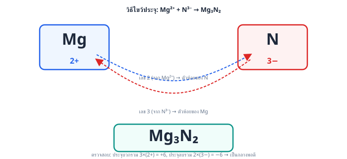
2 ขั้นที่ 2: ทำให้ประจุรวมเป็นศูนย์ (วิธีไขว้ประจุ)
ต้องใช้ จำนวน 3 ไอออน (ประจุรวม ) กับ จำนวน 2 ไอออน (ประจุรวม )
จึงได้สูตร เรียกชื่อว่า แมกนีเซียมไนไตรด์ (magnesium nitride)
เหตุใดตัวเลือกอื่นจึงผิด
ตอบ: ข้อ ค.
ข้อ 2 — ตอบ ก.
นิยาม: พันธะโคออร์ดิเนตโคเวเลนต์ คือพันธะโคเวเลนต์ที่อิเล็กตรอนคู่ร่วมพันธะ มาจากอะตอมเดียว (อะตอมหนึ่งให้ทั้งคู่ อีกอะตอมไม่ได้ให้เลย)
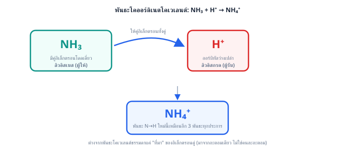
วิเคราะห์ทีละตัวเลือก
คำตอบคือ
ตอบ: ข้อ ก.
ข้อ 3 — ตอบ ง.
เรียกว่า คอปเปอร์(II)ออกไซด์
หลักการเรียกชื่อ
ตรวจทีละข้อ
ที่มาของตัวลวง: ผู้เรียนมักสับสนว่าตัวห้อย 2 ที่ Cu หมายถึงประจุ แท้จริงตัวห้อยยิ่งมากแปลว่าประจุต่อไอออนยิ่งน้อย (ต้องใช้หลายไอออนมาถ่วงประจุกับ หนึ่งไอออน)
คำตอบคือ เรียกว่า คอปเปอร์(II)ออกไซด์
ตอบ: ข้อ ง. เรียกว่า คอปเปอร์(II)ออกไซด์
ข้อ 4 — ตอบ ข.
1 ขั้นที่ 1: อ่านชื่อหาประจุของแต่ละไอออน
2 ขั้นที่ 2: ไขว้ประจุเพื่อให้ผลรวมประจุเป็นศูนย์
ประจุของ คือ 3 และของ คือ 2 นำเลขประจุไปไขว้เป็นตัวห้อยของอีกฝ่าย (ต้องใส่วงเล็บรอบ เพราะมีมากกว่า 1 หน่วย):
3 ขั้นที่ 3: ตรวจสอบสมดุลประจุ
ประจุรวมเป็นศูนย์พอดี สูตรจึงถูกต้อง
เหตุใดตัวเลือกอื่นจึงผิด
คำตอบคือ
ตอบ: ข้อ ข.
ข้อ 5 — ตอบ ก.
และ
หลักคิดแบบเร็ว: พันธะไอออนิกชัดเจนที่สุดเกิดระหว่างโลหะที่ว่องไวเสียอิเล็กตรอนที่สุด (มุมล่างซ้ายของตาราง) กับอโลหะที่ว่องไวรับอิเล็กตรอนที่สุด (มุมบนขวา)
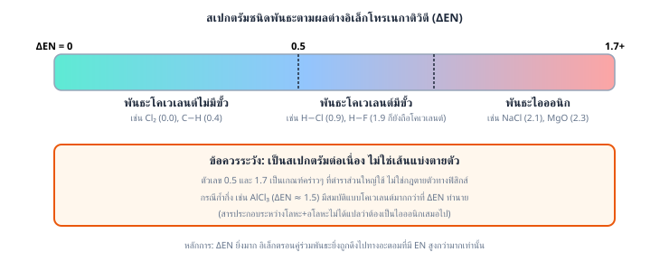
อยู่หมู่ IA คาบ 4 (โลหะแอลคาไล เสียอิเล็กตรอนง่ายมาก) และ อยู่หมู่ VIIA คาบ 2 (อโลหะที่ EN สูงสุดในตาราง) คู่นี้จึงอยู่ห่างกันสุดขั้วทั้งแนวโลหะ-อโลหะและ EN
ระวัง: กับ และ กับ เป็นอโลหะ-อโลหะทั้งคู่ จึงเป็นพันธะโคเวเลนต์ ไม่ใช่ไอออนิก ส่วน กับ เป็นอโลหะหมู่เดียวกัน EN ใกล้เคียงกันมาก จึงเป็นโคเวเลนต์ไม่มีขั้วเกือบสมบูรณ์ ไม่ใช่ไอออนิกเช่นกัน
ตอบ: ข้อ ก. และ
ข้อ 6 — ตอบ ข.
หลักการ: สารประกอบไอออนิกที่มี ไอออนหลายอะตอม (polyatomic ion) จะมีพันธะ 2 ชนิดในตัวเดียว คือ (1) พันธะไอออนิกระหว่างไอออนบวกกับไอออนลบ และ (2) พันธะโคเวเลนต์ภายในไอออนหลายอะตอมนั้น
วิเคราะห์ทีละตัวเลือก
คำตอบคือ
ตอบ: ข้อ ข.
ข้อ 7 — ตอบ ง.
ก ข และ ค
วิเคราะห์ทีละข้อความ
(ก) ถูกต้อง: เป็นสารประกอบไอออนิกที่ประกอบด้วยไอออนบวก และไอออนลบ ยึดกันด้วยแรงดึงดูดไฟฟ้าสถิต (พันธะไอออนิก) — สังเกตว่าเป็นสารไอออนิกได้แม้ไม่มีอะตอมโลหะเลย
(ข) ถูกต้อง: ภายใน มีพันธะโคเวเลนต์ N−H 4 พันธะ และภายใน มีพันธะโคเวเลนต์ N−O (ซึ่งมีเรโซแนนซ์ อันดับพันธะเฉลี่ย )
(ค) ถูกต้อง: เกิดจาก โดย N ใช้อิเล็กตรอนคู่โดดเดี่ยวของตัวเองสร้างพันธะให้ ทั้งคู่ พันธะที่ 4 นี้จึงเป็นพันธะโคออร์ดิเนตโคเวเลนต์ (เมื่อเกิดแล้วพันธะ N−H ทั้ง 4 เหมือนกันทุกประการ)
สรุป: สารนี้ตัวเดียวมีพันธะครบ 3 ลักษณะ คือ ไอออนิก โคเวเลนต์ และโคออร์ดิเนตโคเวเลนต์ → ถูกทั้ง ก ข และ ค
ตัวลวง: ผู้ที่ตอบ "ก เท่านั้น" มักเข้าใจว่าสารไอออนิกต้องมีแต่พันธะไอออนิกล้วน ส่วนผู้ที่ตัดข้อ (ค) ทิ้งมักลืมที่มาของพันธะที่ 4 ใน
ตอบ: ข้อ ง. ก ข และ ค
ข้อ 8 — ตอบ ง.
ก ข และ ค
หลักคิด: ระบุตำแหน่งธาตุจากการจัดเรียงอิเล็กตรอนก่อน แล้วจึงทำนายชนิดพันธะ (โลหะ+อโลหะ → ไอออนิก, อโลหะ+อโลหะ → โคเวเลนต์) และสูตรจากการถ่วงประจุหรือเวเลนซ์
1 ขั้นที่ 1: ระบุธาตุ
2 ขั้นที่ 2: ตรวจ (ก) โลหะ X เสียอิเล็กตรอน 1 ตัวเป็น อโลหะ Y รับ 1 ตัวเป็น → ประจุถ่วงกันแบบ 1:1 ได้สูตร XY เป็นพันธะไอออนิก → ถูกต้อง
3 ขั้นที่ 3: ตรวจ (ข) Z กับ Y เป็นอโลหะทั้งคู่ → โคเวเลนต์ Z ต้องการอิเล็กตรอนอีก 2 ตัว จึงสร้างพันธะเดี่ยว 2 พันธะกับ Y สองอะตอม ได้ ZY อะตอมกลาง Z เหลือคู่โดดเดี่ยว คู่ เป็นแบบ → รูปร่างมุมงอ ไดโพลหักล้างไม่หมด จึงมีขั้ว → ถูกต้อง
4 ขั้นที่ 4: ตรวจ (ค) กับ ถ่วงประจุต้องใช้ X สองไอออน ได้ XZ เป็นสารไอออนิก จุดหลอมเหลวสูง ของแข็งไม่นำไฟฟ้าแต่เมื่อหลอมเหลวไอออนเคลื่อนที่ได้จึงนำไฟฟ้า → ถูกต้อง
ระวัง: ผู้ที่ตัด (ข) ทิ้งมักเผลอคิดว่าสารที่มี Y (คล้ายคลอรีน) ต้องเป็นไอออนิกเสมอ — ต้องดูคู่ปฏิกิริยาว่าเป็นโลหะหรืออโลหะ ส่วนผู้ที่ตัด (ค) มักไขว้ประจุพลาดเป็น XZ
คำตอบคือ ก ข และ ค
ตอบ: ข้อ ง. ก ข และ ค
ข้อ 9 — ตอบ ข.
กรดลิวอิสคือตัวรับอิเล็กตรอนคู่โดดเดี่ยว เบสลิวอิสคือตัวให้อิเล็กตรอนคู่โดดเดี่ยว
หลักการ: นิยามกรด-เบสของลิวอิสมองที่การให้/รับอิเล็กตรอนคู่โดดเดี่ยว ไม่ใช่การให้/รับโปรตอนแบบเบรินสเตด-โลว์รี
ที่มาของตัวลวง
คำตอบคือ กรดลิวอิสคือตัวรับอิเล็กตรอนคู่โดดเดี่ยว เบสลิวอิสคือตัวให้อิเล็กตรอนคู่โดดเดี่ยว
ตอบ: ข้อ ข. กรดลิวอิสคือตัวรับอิเล็กตรอนคู่โดดเดี่ยว เบสลิวอิสคือตัวให้อิเล็กตรอนคู่โดดเดี่ยว
ข้อ 10 — ตอบ ค.
16
หลักคิด: จำนวนเวเลนซ์อิเล็กตรอนทั้งหมด = ผลรวมเวเลนซ์อิเล็กตรอนของทุกอะตอมในโมเลกุล
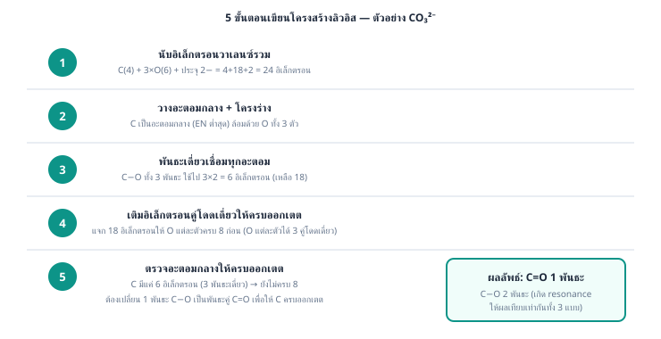
1 ขั้นที่ 1: C อยู่หมู่ IVA มีเวเลนซ์อิเล็กตรอน 4 ตัว
2 ขั้นที่ 2: O อยู่หมู่ VIA มีเวเลนซ์อิเล็กตรอน 6 ตัว มี 2 อะตอม → ตัว
3 ขั้นที่ 3: รวมทั้งหมด
อิเล็กตรอน 16 ตัวนี้จัดเป็นพันธะคู่ C=O สองชุด (8 ตัว) และคู่โดดเดี่ยวบน O อะตอมละ 2 คู่ (8 ตัว) พอดี
ระวัง (ที่มาของตัวลวง)
คำตอบคือ 16
ตอบ: ข้อ ค. 16
ข้อ 11 — ตอบ ก.
หลักการ: กรดลิวอิสต้องเป็นตัว รับ อิเล็กตรอนคู่โดดเดี่ยว ส่วนเบสลิวอิสต้องมีอิเล็กตรอนคู่โดดเดี่ยวให้
วิเคราะห์ทีละตัวเลือก
ที่มาของตัวลวง: ผู้ที่สับสนอาจคิดว่า หรือ เป็นกรดเพราะมี H อยู่ในสูตร แต่ต้องพิจารณาว่าอะตอมกลาง (O) มีอิเล็กตรอนคู่โดดเดี่ยวเหลือให้หรือไม่ ไม่ใช่ดูจากชื่อสารที่คุ้นเคยว่าเป็น "กรด/เบส" แบบเบรินสเตด-โลว์รี
คำตอบคือ
ตอบ: ข้อ ก.
ข้อ 12 — ตอบ ก.
หลักคิด: นับอิเล็กตรอนรอบอะตอมกลาง (พันธะละ 2 ตัว + คู่โดดเดี่ยวคู่ละ 2 ตัว) แล้วเทียบกับ 8
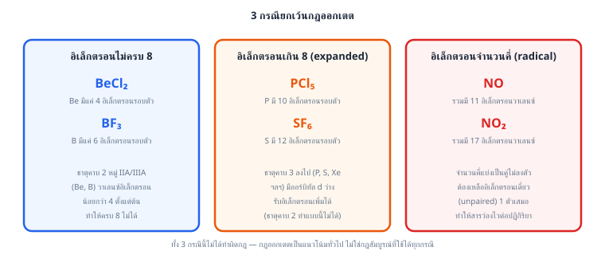
1 ขั้นที่ 1: : C สร้างพันธะคู่กับ O สองชุด อิเล็กตรอนรอบ C ตัว → ครบออกเตตพอดี
ขั้นที่ 2: ตรวจตัวเลือกที่เหลือ (ล้วนเป็นข้อยกเว้น)
ระวัง: อย่าตัดสินจากหน้าตาสูตร — ดูคล้ายสารไอออนิกของโลหะหมู่ IIA แต่ในสถานะแก๊สเป็นโมเลกุลโคเวเลนต์ที่ไม่ครบออกเตต และพันธะคู่ของ ต้องนับอิเล็กตรอนพันธะละ 4 ตัว ไม่ใช่ 2 ตัว
คำตอบคือ
ตอบ: ข้อ ก.
ข้อ 13 — ตอบ ก.
เป็นกรดลิวอิสเพราะ B มีวงโคจรว่างรับอิเล็กตรอนคู่โดดเดี่ยวจาก N
ขั้นที่ 1: วิเคราะห์
B มีเวเลนซ์อิเล็กตรอน 3 ตัว สร้างพันธะกับ F ครบ 3 พันธะ อะตอมกลาง B จึงมีอิเล็กตรอนล้อมรอบเพียง 6 ตัว (ไม่ครบออกเตต) เหลือวงโคจรว่างอยู่ 1 ตำแหน่ง → พร้อม รับ อิเล็กตรอนคู่โดดเดี่ยวจากอะตอมอื่นเข้ามาเติมวงโคจรว่างนี้ จึงเป็น กรดลิวอิส
ขั้นที่ 2: วิเคราะห์
N มีคู่โดดเดี่ยว 1 คู่ที่ยังไม่ได้ใช้สร้างพันธะ จึง ให้ คู่โดดเดี่ยวนี้แก่ B เพื่อสร้างพันธะโคออร์ดิเนตโคเวเลนต์ N–B จึงเป็น เบสลิวอิส
3 ขั้นที่ 3: สรุปพันธะที่เกิด
พันธะ N–B ที่เกิดขึ้นคือพันธะโคออร์ดิเนตโคเวเลนต์ เพราะอิเล็กตรอนคู่ร่วมพันธะมาจาก N ฝ่ายเดียว
ที่มาของตัวลวง
คำตอบคือ เป็นกรดลิวอิสเพราะ B มีวงโคจรว่างรับอิเล็กตรอนคู่โดดเดี่ยวจาก N
ตอบ: ข้อ ก. เป็นกรดลิวอิสเพราะ B มีวงโคจรว่างรับอิเล็กตรอนคู่โดดเดี่ยวจาก N
ข้อ 14 — ตอบ ก.
พิจารณาอิเล็กตรอนรอบอะตอมกลางทีละโมเลกุล
ข้อสังเกต: ธาตุคาบ 2 (เช่น C, N, O, F) ไม่มีทางมีอิเล็กตรอนเกิน 8 เพราะไม่มีออร์บิทัล d ในระดับพลังงานเวเลนซ์ ส่วนธาตุคาบ 3 ขึ้นไป (P, S, Cl, Xe) ขยายออกเตตได้
คำตอบคือ
ตอบ: ข้อ ก.
ข้อ 15 — ตอบ ข.
C มีประจุฟอร์มัล และ O มีประจุฟอร์มัล
สูตรประจุฟอร์มัล
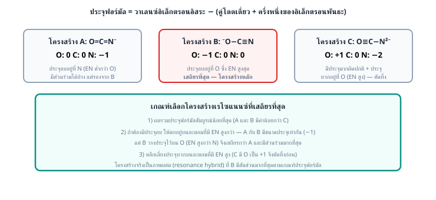
โดย = จำนวนเวเลนซ์อิเล็กตรอนของอะตอมอิสระ, = จำนวนอิเล็กตรอนคู่โดดเดี่ยว (นับเป็นตัว), = จำนวนพันธะ
1 ขั้นที่ 1: อะตอม C
2 ขั้นที่ 2: อะตอม O
ตรวจสอบ: ผลรวมประจุฟอร์มัล ตรงกับประจุของโมเลกุล CO ที่เป็นกลาง
ข้อควรระวัง: หลายคนเดาว่า O ต้องเป็นลบเพราะมีค่าอิเล็กโทรเนกาติวิตีสูงกว่า (ตัวเลือกที่ให้ C เป็น , O เป็น ) แต่ประจุฟอร์มัลคิดจากการแบ่งอิเล็กตรอนพันธะคนละครึ่งเท่า ๆ กัน ไม่เกี่ยวกับอิเล็กโทรเนกาติวิตี
คำตอบคือ C มีประจุฟอร์มัล และ O มีประจุฟอร์มัล
ตอบ: ข้อ ข. C มีประจุฟอร์มัล และ O มีประจุฟอร์มัล
ข้อ 16 — ตอบ ง.
3, 2, 1
วิธีคิด: เมื่อทุกพันธะเป็นพันธะเดี่ยว จำนวนคู่โดดเดี่ยวบนอะตอมกลาง เมื่อ = เวเลนซ์อิเล็กตรอนของอะตอมกลาง และ = จำนวนพันธะเดี่ยวที่สร้าง (อะตอมกลางใช้อิเล็กตรอน 1 ตัวต่อ 1 พันธะกับ F)
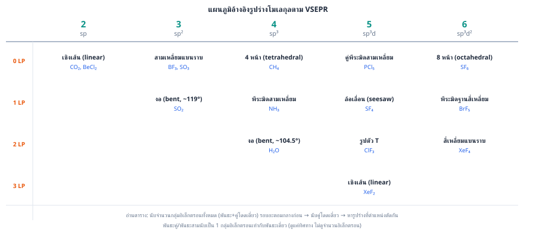
คำนวณทีละตัว
ตามลำดับคือ 3, 2, 1
ข้อสังเกต: ทั้งสามโมเลกุลนี้อะตอมกลางมีอิเล็กตรอนรอบตัวเกิน 8 (ขยายออกเตต) ทำได้เพราะเป็นธาตุคาบ 3 ขึ้นไป
ที่มาของตัวลวง
ตอบ: ข้อ ง. 3, 2, 1
ข้อ 17 — ตอบ ก.
พันธะ C−O ทั้งสามพันธะยาวเท่ากัน โดยมีความยาวอยู่ระหว่างพันธะเดี่ยว C−O กับพันธะคู่ C=O
1 ขั้นที่ 1: เข้าใจเรโซแนนซ์
โครงสร้างลิวอิสของ เขียนได้ 3 แบบ โดยพันธะคู่ C=O สลับตำแหน่งไปอยู่กับ O แต่ละอะตอม โครงสร้างจริงไม่ใช่แบบใดแบบหนึ่ง แต่เป็น เรโซแนนซ์ไฮบริด คืออิเล็กตรอนพันธะคู่ถูกเกลี่ย (delocalized) เท่า ๆ กันทั้งสามพันธะ
2 ขั้นที่ 2: คำนวณอันดับพันธะเฉลี่ย
มีพันธะรวม 4 พันธะ (เดี่ยว 2 + คู่ 1 นับเป็น 2) เกลี่ยให้ตำแหน่ง C−O จำนวน 3 ตำแหน่ง:
จึงไม่ใช่ 2 (ตัวเลือกที่บอกอันดับพันธะเท่ากับ 2 จึงผิด)
3 ขั้นที่ 3: สรุปความยาวพันธะ
อันดับพันธะ อยู่ระหว่างพันธะเดี่ยว (อันดับ 1) กับพันธะคู่ (อันดับ 2) และเนื่องจากอันดับพันธะยิ่งมากพันธะยิ่งสั้น ความยาวพันธะทั้งสามจึง เท่ากันทุกพันธะ และอยู่ระหว่างความยาวพันธะเดี่ยวกับพันธะคู่ — ข้อมูลการทดลองยืนยันว่าพันธะ C−O ทั้งสามใน ยาวเท่ากันจริง
4 ขั้นที่ 4: รูปร่าง
C เป็นอะตอมกลางแบบ ไม่มีคู่โดดเดี่ยว → รูปร่าง สามเหลี่ยมแบนราบ มุม ไม่ใช่พีระมิด (พีระมิดต้องมีคู่โดดเดี่ยวแบบ )
คำตอบคือ พันธะ C−O ทั้งสามยาวเท่ากัน อยู่ระหว่างพันธะเดี่ยวกับพันธะคู่
ตอบ: ข้อ ก. พันธะ C−O ทั้งสามพันธะยาวเท่ากัน โดยมีความยาวอยู่ระหว่างพันธะเดี่ยว C−O กับพันธะคู่ C=O
ข้อ 18 — ตอบ ข.
แบบที่ 2 เพราะประจุฟอร์มัล ตกอยู่บน O ซึ่งมีอิเล็กโทรเนกาติวิตีสูงที่สุด
หลักคิด: โครงสร้างเรโซแนนซ์ที่มีส่วนร่วมมาก ต้อง (1) ประจุฟอร์มัลใกล้ศูนย์ที่สุด และ (2) ถ้าต้องมีประจุลบ ให้ตกบนอะตอมที่มีอิเล็กโทรเนกาติวิตีสูงที่สุด — ใช้สูตร ( = เวเลนซ์อิเล็กตรอน, = อิเล็กตรอนคู่โดดเดี่ยวนับเป็นตัว, = จำนวนพันธะ)
1 ขั้นที่ 1: แบบที่ 1 — O มีคู่โดดเดี่ยว 2 คู่, N มีคู่โดดเดี่ยว 2 คู่
2 ขั้นที่ 2: แบบที่ 2 — O มีคู่โดดเดี่ยว 3 คู่, N มีคู่โดดเดี่ยว 1 คู่
3 ขั้นที่ 3: แบบที่ 3 — O มีคู่โดดเดี่ยว 1 คู่, N มีคู่โดดเดี่ยว 3 คู่
4 ขั้นที่ 4: เปรียบเทียบ แบบที่ 3 มีประจุแยกขั้วมาก ( กับ ) และประจุบวกตกบน O ที่ดึงอิเล็กตรอนเก่ง → ส่วนร่วมน้อยที่สุด ส่วนแบบที่ 1 กับแบบที่ 2 มีประจุรวม เท่ากัน (ตรงกับประจุไอออน) ต่างกันที่ตำแหน่ง: แบบที่ 2 วางประจุ บน O ซึ่งอิเล็กโทรเนกาติวิตีสูงกว่า N จึงเสถียรกว่าและมีส่วนร่วมมากที่สุด
ระวัง (ที่มาของตัวลวง)
คำตอบคือ แบบที่ 2
ตอบ: ข้อ ข. แบบที่ 2 เพราะประจุฟอร์มัล ตกอยู่บน O ซึ่งมีอิเล็กโทรเนกาติวิตีสูงที่สุด
ข้อ 19 — ตอบ ก.
หลักคิด: จำสั้น ๆ ว่า สลายพันธะ = ดูดพลังงาน, สร้างพันธะ = คายพลังงาน เสมอ (การสลายต้องใส่พลังงานเข้าไปเอาชนะแรงยึดเหนี่ยว)
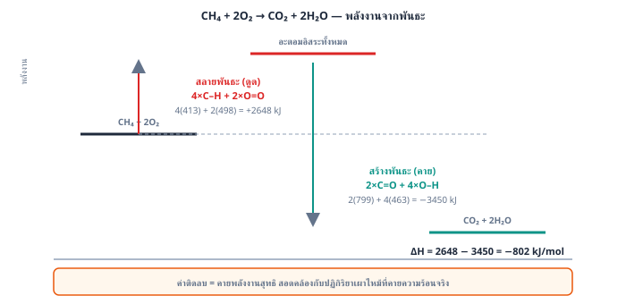
1 ขั้นที่ 1: คือการ สลาย พันธะ Cl−Cl ให้เป็นอะตอมอิสระ ต้องดูดพลังงานเท่ากับพลังงานพันธะ Cl−Cl → ดูดพลังงาน
ขั้นที่ 2: ตรวจตัวเลือกอื่น — ล้วนเป็นการสร้างแรงยึดเหนี่ยว จึงคายพลังงานทั้งหมด
ระวัง: อย่าสับสนทิศทางลูกศร — โจทย์ประเภทนี้ชอบเขียนสมการสร้างพันธะให้ดูคล้ายการสลาย ให้ดูว่าฝั่งผลิตภัณฑ์ "อนุภาคแยกจากกันมากขึ้น" (ดูด) หรือ "รวมตัวกัน" (คาย)
คำตอบคือ
ตอบ: ข้อ ก.
ข้อ 20 — ตอบ ง.
หลักคิด:
1 ขั้นที่ 1: พลังงานสลายพันธะสารตั้งต้น (ดูดพลังงาน)
2 ขั้นที่ 2: พลังงานสร้างพันธะผลิตภัณฑ์ (คายพลังงาน)
3 ขั้นที่ 3: คำนวณ
ค่าติดลบ → ปฏิกิริยา คายความร้อน (พันธะที่สร้างรวมแล้วแข็งแรงกว่าพันธะที่สลาย)
ระวัง (ที่มาของตัวลวง)
คำตอบคือ
ตอบ: ข้อ ง.
ข้อ 21 — ตอบ ก.
หลักการ: (พลังงานที่ใช้สลายพันธะของสารตั้งต้น) (พลังงานที่คายออกจากการสร้างพันธะของผลิตภัณฑ์)
1 ขั้นที่ 1: พลังงานสลายพันธะ (ดูดพลังงาน)
2 ขั้นที่ 2: พลังงานสร้างพันธะ (คายพลังงาน)
3 ขั้นที่ 3: คำนวณ
ค่าติดลบแสดงว่าเป็นปฏิกิริยา คายความร้อน (พันธะที่สร้างแข็งแรงกว่าพันธะที่สลาย)
ตัวลวงที่พบบ่อย
คำตอบคือ
ตอบ: ข้อ ก.
ข้อ 22 — ตอบ ก.
ดูดพลังงาน
หลักการ:
ระวังว่านี่คือปฏิกิริยา สลาย แอมโมเนีย: ฝั่งที่ถูกสลายพันธะคือ และฝั่งที่สร้างพันธะคือ กับ
1 ขั้นที่ 1: พลังงานสลายพันธะสารตั้งต้น (ดูดพลังงาน)
2 ขั้นที่ 2: พลังงานสร้างพันธะผลิตภัณฑ์ (คายพลังงาน)
ขั้นที่ 3: คำนวณ ของสมการ
ค่าเป็นบวก → ปฏิกิริยา ดูดความร้อน (สมเหตุสมผล เพราะปฏิกิริยาย้อนกลับคือการสังเคราะห์แอมโมเนียซึ่งคายความร้อน)
ขั้นที่ 4: แปลงเป็นต่อโมลของ
สมการนี้ใช้ 2 โมล ดังนั้นต่อ 1 โมล:
ที่มาของตัวลวง
คำตอบคือ ดูดพลังงาน
ตอบ: ข้อ ก. ดูดพลังงาน
ข้อ 23 — ตอบ ข.
358
หลักการ: ตั้งสมการ แล้วแก้หาค่าที่ไม่รู้
1 ขั้นที่ 1: นับพันธะที่เปลี่ยนแปลง
2 ขั้นที่ 2: ตั้งสมการ ให้พลังงานพันธะ
3 ขั้นที่ 3: แก้สมการ
ตรวจสอบ: ตรงตามโจทย์ (และค่านี้สมเหตุสมผล เพราะพันธะเดี่ยว ต้องอ่อนกว่าพันธะคู่ ที่มีค่า )
ที่มาของตัวลวง
คำตอบคือ kJ/mol
ตอบ: ข้อ ข. 358
ข้อ 24 — ตอบ ข.
หลักการ: พลังงานแลตทิซแปรผันตามแรงดึงดูดไฟฟ้าสถิตระหว่างไอออน
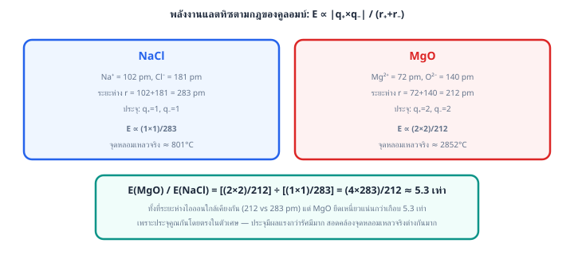
คือ ประจุยิ่งมากและไอออนยิ่งเล็ก พลังงานแลตทิซยิ่งสูง
1 ขั้นที่ 1: เปรียบเทียบขนาดประจุ (ปัจจัยหลัก)
ดังนั้น กับ ชนะกลุ่มประจุ อย่างชัดเจน (แรงดึงดูดมากกว่าประมาณ 4 เท่าที่ระยะเท่ากัน)
ขั้นที่ 2: เปรียบเทียบขนาดไอออนภายในกลุ่มประจุเดียวกัน
สรุป: มีทั้งประจุสูงและไอออนเล็ก จึงมีพลังงานแลตทิซสูงที่สุด (ประมาณ 3791 kJ/mol) สอดคล้องกับจุดหลอมเหลวที่สูงมากประมาณ 2852 องศาเซลเซียส จนใช้ทำวัสดุทนไฟ
ตัวลวง: ไอออนเล็กที่สุดในบรรดาคู่ประจุ ทำให้หลายคนเลือก แต่ปัจจัยประจุสำคัญกว่าปัจจัยขนาด
คำตอบคือ
ตอบ: ข้อ ข.
ข้อ 25 — ตอบ ก.
หลักการ (วัฏจักรบอร์น-ฮาเบอร์): พลังงานของปฏิกิริยารวมเท่ากับผลรวมพลังงานของทุกขั้นย่อยตามกฎของเฮสส์ — จุดต่างสำคัญของสารแบบ คือ ต้องไอออไนซ์ 2 ลำดับ, สลาย เต็มโมเลกุล (ต้องการ Cl 2 อะตอม) และรับอิเล็กตรอน 2 ครั้ง
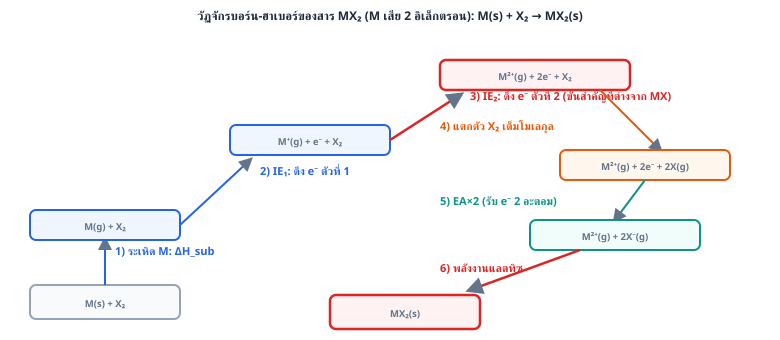
1 ขั้นที่ 1: แจกแจงขั้นย่อย
2 ขั้นที่ 2: ตั้งสมการและแก้
ตรวจสอบ: ตรงตามโจทย์ (ค่าติดลบมากสมเหตุสมผล เพราะไอออน กับ สองไอออนดึงดูดกันแรงกว่าเกลือแบบ มาก และชดเชยพลังงานไอออไนเซชันสองลำดับที่สูงได้)
ที่มาของตัวลวง
คำตอบคือ kJ/mol
ตอบ: ข้อ ก.
ข้อ 26 — ตอบ ก.
หลักคิด: ใช้กฎของเฮสส์ตามวัฏจักรบอร์น-ฮาเบอร์ ผลรวมของทุกขั้นตอนย่อย (รวมพลังงานแลตทิซ) ต้องเท่ากับ ของสารประกอบ
1 ขั้นที่ 1 รวมค่าที่ทราบทั้งหมด (ไม่รวม ):
2 ขั้นที่ 2 แทนค่าและแก้หา :
ค่าที่ได้เป็นบวกมาก สมเหตุสมผลเพราะ คือพลังงานดึงอิเล็กตรอนตัวที่สองออกจากไอออน ที่มีประจุบวกอยู่แล้ว ย่อมต้องใช้พลังงานสูงกว่า เสมอ
ระวัง: ตัวลวง มาจากลืมรวมพจน์ (+738) เข้าไปในผลรวมที่ทราบแล้ว ทำให้ดึง ออกมาผิดพลาด ตัวลวง มาจากลืมรวมพจน์ (+700) ส่วนตัวลวง มาจากใส่เครื่องหมายผิดให้ (ใช้ แทน ) — ทุกกรณีคือลืม/พลาดพจน์ใดพจน์หนึ่งในสมการเฮสส์แล้วดึง ออกมาไม่ตรง
ตอบ: ข้อ ก.
ข้อ 27 — ตอบ ก.
หลักคิด: โมเลกุล (โพรเพน โครงสร้าง ) มีพันธะ C–H ทั้งหมด 8 เส้น และพันธะ C–C 2 เส้น
1 ขั้นที่ 1 พันธะที่สลาย (สารตั้งต้น): 8 เส้น C–H, 2 เส้น C–C, 5 เส้น O=O
2 ขั้นที่ 2 พันธะที่สร้าง (ผลิตภัณฑ์): 3 โมเลกุล มี C=O โมเลกุลละ 2 เส้น รวม 6 เส้น, 4 โมเลกุล มี O–H โมเลกุลละ 2 เส้น รวม 8 เส้น
3 ขั้นที่ 3 หา ต่อโมล: (คายพลังงาน สอดคล้องกับการเผาไหม้)
4 ขั้นที่ 4 หาโมลโพรเพนที่เผา: มวลโมลาร์
5 ขั้นที่ 5 พลังงานที่คายออกมา: (3 s.f.)
ระวัง: ตัวลวง มาจากลืมนับพันธะ C–C ที่ต้องสลาย (นับแค่ C–H กับ O=O) ตัวลวง มาจากลืมแปลงมวล เป็นโมล (ใช้ ต่อโมลตรงๆ เสมือนเผา 1 โมลเต็ม) ส่วนตัวลวง มาจากคำนวณโมลผิด (หารด้วย 88 แทนที่จะเป็น 44 มวลโมลาร์จริง)
ตอบ: ข้อ ก.
ข้อ 28 — ตอบ ค.
หลักการ (วัฏจักรบอร์น-ฮาเบอร์): แตกปฏิกิริยารวมออกเป็นขั้นย่อย แล้วรวมพลังงานทุกขั้นตามกฎของเฮสส์
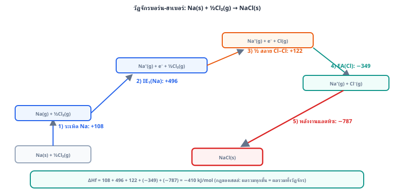
1 ขั้นที่ 1: ระเหิดโลหะ
2 ขั้นที่ 2: ไอออไนซ์โซเดียม
3 ขั้นที่ 3: สลายพันธะคลอรีน — ใช้เพียงครึ่งโมเลกุล
สมการต้องการ Cl เพียง 1 อะตอม จึงใช้ :
4 ขั้นที่ 4: คลอรีนรับอิเล็กตรอน
5 ขั้นที่ 5: ไอออนแก๊สรวมเป็นผลึก (พลังงานแลตทิซ)
6 ขั้นที่ 6: รวมทุกขั้น
ค่าติดลบมาก แสดงว่าการเกิดผลึก คายพลังงานสูง ผลึกจึงเสถียร
ตัวลวงที่พบบ่อย
คำตอบคือ
ตอบ: ข้อ ค.
ข้อ 29 — ตอบ ค.
หลักการ: จำนวนกลุ่มอิเล็กตรอนรอบอะตอมกลาง (ตามตาราง VSEPR ที่คุ้นเคยอยู่แล้ว) เชื่อมโยงตรงกับชนิดออร์บิทัลลูกผสม: 2 กลุ่ม → , 3 กลุ่ม → , 4 กลุ่ม →
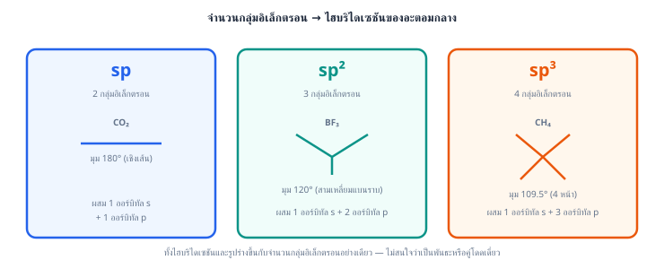
นำมาใช้กับโจทย์: เป็นแบบ มีกลุ่มอิเล็กตรอนรอบ C ทั้งหมด 4 กลุ่ม (พันธะเดี่ยว 4 พันธะ ไม่มีคู่โดดเดี่ยว) จึงใช้ออร์บิทัลลูกผสมชนิด
คำตอบคือ
ตอบ: ข้อ ค.
ข้อ 30 — ตอบ ข.
มุมงอ
หลักคิด: รูปร่างโมเลกุลดูจากจำนวนอะตอมที่ล้อมรอบ (X) และคู่โดดเดี่ยว (E) บนอะตอมกลาง
1 ขั้นที่ 1: O มีเวเลนซ์อิเล็กตรอน 6 ตัว สร้างพันธะเดี่ยวกับ H 2 พันธะ (ใช้ไป 2 ตัว) เหลือ คู่โดดเดี่ยว → เป็นแบบ
2 ขั้นที่ 2: กลุ่มอิเล็กตรอน 4 กลุ่มจัดตัวแบบทรงสี่หน้า แต่รูปร่างโมเลกุลนับเฉพาะตำแหน่งอะตอม จึงเห็นเป็น มุมงอ (bent) มุมพันธะประมาณ (แคบกว่า เพราะคู่โดดเดี่ยว 2 คู่บีบมุม)
ระวัง (ที่มาของตัวลวง)
คำตอบคือ มุมงอ
ตอบ: ข้อ ข. มุมงอ
ข้อ 31 — ตอบ ก.
, ,
หลักการ: นับจำนวนกลุ่มอิเล็กตรอนรอบอะตอมกลางจากโครงสร้าง VSEPR ที่คุ้นเคย แล้วจับคู่กับชนิดไฮบริด: 2 กลุ่ม → , 3 กลุ่ม → , 4 กลุ่ม →
วิเคราะห์ทีละโมเลกุล
คำตอบคือ , ,
ตอบ: ข้อ ก. , ,
ข้อ 32 — ตอบ ง.
พีระมิดคู่ฐานสามเหลี่ยม
หลักคิด: นับกลุ่มอิเล็กตรอนรอบอะตอมกลางเป็น ก่อน แล้วจึงระบุรูปร่าง
1 ขั้นที่ 1: P อยู่หมู่ VA มีเวเลนซ์อิเล็กตรอน 5 ตัว สร้างพันธะเดี่ยวกับ Cl ครบ 5 พันธะ ใช้อิเล็กตรอนหมดพอดี เหลือคู่โดดเดี่ยว คู่ → เป็นแบบ (อะตอมกลางมีอิเล็กตรอน 10 ตัว ขยายออกเตตได้เพราะ P อยู่คาบ 3)
2 ขั้นที่ 2: กลุ่มอิเล็กตรอน 5 กลุ่มที่ผลักกันให้ห่างที่สุดจะจัดเป็น พีระมิดคู่ฐานสามเหลี่ยม (trigonal bipyramidal) — Cl 3 อะตอมอยู่ในระนาบฐานทำมุม ต่อกัน และอีก 2 อะตอมอยู่บน-ล่างแกนตั้ง ทำมุม กับระนาบฐาน
ระวัง (ที่มาของตัวลวง)
คำตอบคือ พีระมิดคู่ฐานสามเหลี่ยม
ตอบ: ข้อ ง. พีระมิดคู่ฐานสามเหลี่ยม
ข้อ 33 — ตอบ ค.
หลักการ VSEPR: จำนวนกลุ่มอิเล็กตรอนรอบอะตอมกลางกำหนดมุมพื้นฐาน และคู่โดดเดี่ยวจะบีบมุมให้แคบลง (เพราะคู่โดดเดี่ยวผลักแรงกว่าคู่พันธะ)
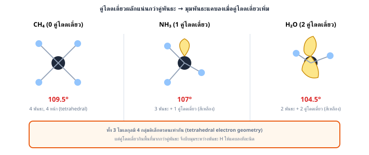
วิเคราะห์ทีละโมเลกุล
สรุปลำดับ: คือ
ที่มาของตัวลวง
ตอบ: ข้อ ค.
ข้อ 34 — ตอบ ก.
กับ
หลักการ: รูปร่างโมเลกุลขึ้นกับสูตรทั่วไป (จำนวนอะตอมล้อมรอบ X และคู่โดดเดี่ยว E) ไม่ใช่ดูแค่จำนวนอะตอมที่เท่ากัน
วิเคราะห์ทีละคู่
คำตอบคือ กับ
ตอบ: ข้อ ก. กับ
ข้อ 35 — ตอบ ค.
ก และ ค
วิเคราะห์ทีละข้อความด้วย VSEPR
(ก) ถูกต้อง:
(ข) ผิด:
(ค) ถูกต้อง:
สรุป: ข้อความที่ถูกต้องคือ (ก) และ (ค)
ตอบ: ข้อ ค. ก และ ค
ข้อ 36 — ตอบ ข.
โมเลกุลที่มี ล้อมรอบจะมีมุมพันธะแคบกว่า
หลักการ (กฎ EN ของอะตอมล้อมรอบ): อะตอมล้อมรอบที่ EN สูงกว่าจะดึงอิเล็กตรอนคู่พันธะออกจากอะตอมกลางไปมากกว่า ทำให้คู่พันธะนั้นอยู่ห่างอะตอมกลางมากขึ้น จึงผลักคู่พันธะ/คู่โดดเดี่ยวอื่นที่อะตอมกลาง น้อยลง → มุมพันธะแคบลง
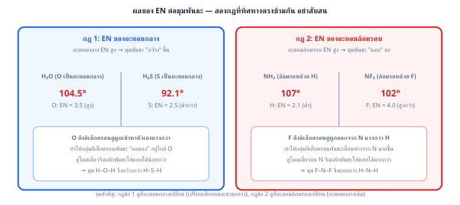
นำมาใช้กับโจทย์: เนื่องจาก โมเลกุลที่มี ล้อมรอบ จะมีคู่พันธะ A– ที่ถูกดึงออกจาก A มากกว่า ผลักกันเองที่ A น้อยกว่า มุมพันธะจึง แคบกว่า โมเลกุลที่มี ล้อมรอบ (ตัวอย่างจริงคือ เทียบกับ )
ที่มาของตัวลวง
คำตอบคือ โมเลกุลที่มี ล้อมรอบจะมีมุมพันธะแคบกว่า
ตอบ: ข้อ ข. โมเลกุลที่มี ล้อมรอบจะมีมุมพันธะแคบกว่า
ข้อ 37 — ตอบ ง.
หลักการ VSEPR: นับคู่อิเล็กตรอนสร้างพันธะ (X) และคู่โดดเดี่ยว (E) รอบอะตอมกลาง
คำตอบคือ
ตอบ: ข้อ ง.
ข้อ 38 — ตอบ ง.
ขั้นที่ 1: พิจารณาผลของคู่โดดเดี่ยว (เปรียบเทียบอะตอมกลางคาบ 2 ด้วยกัน)
คู่โดดเดี่ยวยิ่งมาก มุมยิ่งถูกบีบให้แคบลง
ขั้นที่ 2: เปรียบเทียบลงหมู่เดียวกัน ( กับ )
เป็น เหมือน แต่มุมพันธะเล็กกว่ามาก (ประมาณ ) เพราะ
สรุปลำดับมุม:
ตัวลวง: เป็นตัวลวงหลัก เพราะผู้เรียนจำสูตร "คู่โดดเดี่ยวมากที่สุด มุมแคบที่สุด" จากชุดโมเลกุลคาบ 2 (, , ) โดยไม่ได้คิดถึงผลของขนาดอะตอมกลางเมื่อเลื่อนลงหมู่
คำตอบคือ
ตอบ: ข้อ ง.
ข้อ 39 — ตอบ ข.
ทำให้ F ดึงอิเล็กตรอนคู่พันธะออกจาก N มากกว่า คู่พันธะจึงผลักกันเองที่ N น้อยลง มุมจึงแคบกว่า
หลักการ (กฎ EN ของอะตอมล้อมรอบ): เมื่ออะตอมกลางเป็นชนิดเดียวกันและจำนวนคู่โดดเดี่ยวเท่ากัน แต่อะตอมล้อมรอบ (X) มี EN ต่างกัน — X ที่ EN สูงกว่าจะดึงอิเล็กตรอนคู่พันธะออกจากอะตอมกลางมากกว่า ทำให้คู่พันธะนั้นอยู่ห่างอะตอมกลางมากขึ้น จึงผลักคู่พันธะอื่นที่อะตอมกลาง น้อยลง → มุมพันธะแคบลง
นำมาใช้กับโจทย์
สูงกว่า มาก ดังนั้นใน อะตอม F ดึงอิเล็กตรอนคู่พันธะ N–F ออกจาก N ไปมาก คู่พันธะจึงเบียดกันเองที่ N น้อยกว่ากรณี N–H ใน ทำให้มุม F–N–F แคบกว่ามุม H–N–H
ที่มาของตัวลวง
คำตอบคือ ทำให้ F ดึงอิเล็กตรอนคู่พันธะออกจาก N มากกว่า คู่พันธะจึงผลักกันเองที่ N น้อยลง มุมจึงแคบกว่า
ตอบ: ข้อ ข. ทำให้ F ดึงอิเล็กตรอนคู่พันธะออกจาก N มากกว่า คู่พันธะจึงผลักกันเองที่ N น้อยลง มุมจึงแคบกว่า
ข้อ 40 — ตอบ ก.
ทำให้ N ดึงอิเล็กตรอนคู่พันธะเข้าใกล้ตัวมากกว่า คู่พันธะจึงผลักกันเองมากกว่า มุมจึงกว้างกว่า
หลักการ (กฎ EN ของอะตอมกลาง): เมื่ออะตอมล้อมรอบเป็นชนิดเดียวกันและจำนวนคู่โดดเดี่ยวเท่ากัน แต่อะตอมกลางมี EN ต่างกัน — อะตอมกลางที่ EN สูงกว่าจะดึงอิเล็กตรอนคู่พันธะเข้าใกล้ตัวมากกว่า ทำให้คู่พันธะอยู่ใกล้กันมากขึ้นบริเวณอะตอมกลาง จึง ผลักกันเองมากขึ้น → มุมพันธะกว้างกว่า
นำมาใช้กับโจทย์
สูงกว่า ดังนั้น N ดึงอิเล็กตรอนคู่พันธะ N–H เข้าใกล้ตัวเองมากกว่าที่ P ดึงคู่พันธะ P–H ทำให้คู่พันธะใน อยู่ใกล้กันและผลักกันแรงกว่า มุมจึงกว้างกว่า (นอกจากนี้ P ยังมีขนาดใหญ่กว่า N ทำให้พันธะ P–H ยาวกว่า คู่พันธะยิ่งห่างกันมากขึ้นไปอีก แต่ปัจจัยหลักที่โจทย์เน้นคือ EN ของอะตอมกลาง)
ที่มาของตัวลวง
คำตอบคือ ทำให้ N ดึงอิเล็กตรอนคู่พันธะเข้าใกล้ตัวมากกว่า คู่พันธะจึงผลักกันเองมากกว่า มุมจึงกว้างกว่า
ตอบ: ข้อ ก. ทำให้ N ดึงอิเล็กตรอนคู่พันธะเข้าใกล้ตัวมากกว่า คู่พันธะจึงผลักกันเองมากกว่า มุมจึงกว้างกว่า
ข้อ 41 — ตอบ ก.
มุมงอ (bent), อันดับพันธะ 1.5
หลักคิด: ทำทีละขั้นตามลำดับวิเคราะห์โมเลกุล
1 ขั้นที่ 1 นับอิเล็กตรอนรวม: N มี 5, O มี , ประจุ เพิ่มอีก 1 รวม
2 ขั้นที่ 2 วาดโครงลิวอิส: N อยู่กลาง ต่อกับ O สองตัว โดยหนึ่งเส้นเป็นพันธะคู่ (N=O) อีกเส้นเป็นพันธะเดี่ยว (N–O) พร้อมคู่โดดเดี่ยว 1 คู่บน N (เช็ก: N มี 2 พันธะ + 1 คู่โดด = ครบออกเตต 8 อิเล็กตรอนรอบ N พอดี)
3 ขั้นที่ 3 หารูปร่างด้วย VSEPR: กลุ่มอิเล็กตรอนรอบ N = 2 กลุ่มพันธะ + 1 คู่โดด = 3 กลุ่ม → สัญลักษณ์ → รูปร่างมุมงอ (bent) ไม่ใช่เส้นตรง (คล้าย , ในบทเรียน)
4 ขั้นที่ 4 หาอันดับพันธะ: เนื่องจากมีเรโซแนนซ์ 2 แบบเทียบเท่ากัน พันธะ N=O และ N–O เฉลี่ยกันเป็นพันธะเดียวกันทั้งสองเส้น จำนวนพันธะรวม กระจายบน 2 ตำแหน่ง:
ระวัง: ตัวลวง "เส้นตรง" มาจากลืมนับคู่โดดเดี่ยวบน N (เห็นแค่ 2 อะตอม O ล้อมรอบแล้วรีบตอบ ) ตัวลวงอันดับพันธะ 2 มาจากดูแค่โครงสร้างเรโซแนนซ์แบบเดียว (นับเฉพาะ N=O) โดยลืมเฉลี่ยกับพันธะเดี่ยวอีกเส้น ส่วนอันดับพันธะ 1 มาจากคิดว่าทุกพันธะเป็นพันธะเดี่ยวหมด ไม่ได้พิจารณาเรโซแนนซ์เลย
ตอบ: ข้อ ก. มุมงอ (bent), อันดับพันธะ 1.5
ข้อ 42 — ตอบ ก.
หลักคิด: มุมพันธะถูกกำหนดโดยสิ่งที่อยู่บนอะตอมกลางนอกเหนือจากพันธะ — ไม่มีอะไรเลย (มุมกว้างสุด) > อิเล็กตรอนเดี่ยว 1 ตัว > คู่โดดเดี่ยว 1 คู่ (บีบมุมแรงสุด) ต้องนับอิเล็กตรอนบน N ทีละอนุภาคเพราะประจุต่างกัน
ขั้นที่ 1: — N มีเวเลนซ์ 5 ตัว หักออก 1 ตัวจากประจุ เหลือ 4 ตัว สร้างพันธะคู่กับ O ทั้งสองข้างใช้หมดพอดี → บน N ไม่มีอิเล็กตรอนเหลือเลย เป็น รูปร่างเส้นตรง มุม
ขั้นที่ 2: — เวเลนซ์อิเล็กตรอนรวม 17 ตัว (เลขคี่) บน N มี อิเล็กตรอนเดี่ยว 1 ตัว อิเล็กตรอนตัวเดียวผลักคู่พันธะได้อ่อนกว่าคู่โดดเดี่ยวเต็มคู่ มุมจึงถูกบีบเพียงเล็กน้อย เหลือประมาณ
ขั้นที่ 3: — N มีเวเลนซ์ 5 ตัว บวกเพิ่ม 1 ตัวจากประจุ ทำให้บน N มี คู่โดดเดี่ยวเต็ม 1 คู่ () คู่โดดเดี่ยวผลักแรงที่สุด มุมถูกบีบเหลือประมาณ
4 ขั้นที่ 4: สรุป คือ
ระวัง (ที่มาของตัวลวง)
คำตอบคือ
ตอบ: ข้อ ก.
ข้อ 43 — ตอบ ค.
พันธะ Cl−Cl ใน
หลักคิด: สภาพขั้วของพันธะดูจากผลต่างอิเล็กโทรเนกาติวิตี (EN) ของสองอะตอม — อะตอมชนิดเดียวกันมี EN เท่ากัน ผลต่างเป็นศูนย์ อิเล็กตรอนคู่พันธะถูกดึงเท่ากันสองข้าง จึงไม่มีขั้ว
1 ขั้นที่ 1: พันธะ Cl−Cl เกิดระหว่างอะตอมชนิดเดียวกัน → ผลต่าง EN → พันธะโคเวเลนต์ไม่มีขั้ว
2 ขั้นที่ 2: ตรวจตัวเลือกอื่น ทุกตัวเป็นพันธะระหว่างอะตอมต่างชนิดที่ EN ต่างกันชัดเจน
ระวัง: โจทย์ถามสภาพขั้วของ "พันธะ" ไม่ใช่ "โมเลกุล" — สองเรื่องนี้ต่างกัน เช่น มีพันธะมีขั้วแต่โมเลกุลไม่มีขั้วเพราะไดโพลหักล้างกัน แต่สำหรับพันธะระหว่างอะตอมชนิดเดียวกันอย่าง Cl−Cl ไม่มีขั้วแน่นอนเสมอ
คำตอบคือ พันธะ Cl−Cl ใน
ตอบ: ข้อ ค. พันธะ Cl−Cl ใน
ข้อ 44 — ตอบ ก.
เป็นโคเวเลนต์มีขั้ว
ขั้นที่ 1: คำนวณ
2 ขั้นที่ 2: เทียบกับเกณฑ์
อยู่ในช่วง – → โคเวเลนต์มีขั้ว (สอดคล้องกับความจริงที่ทั้ง C และ O เป็นอโลหะ ไม่มีการถ่ายโอนอิเล็กตรอนขาด)
ที่มาของตัวลวง
คำตอบคือ เป็นโคเวเลนต์มีขั้ว
ตอบ: ข้อ ก. เป็นโคเวเลนต์มีขั้ว
ข้อ 45 — ตอบ ข.
เป็นค่าประมาณสำหรับแบ่งช่วงคร่าวๆ เพราะพันธะเป็นสเปกตรัมต่อเนื่อง จึงควรพิจารณาสมบัติทางกายภาพของสารประกอบร่วมด้วยเสมอ
หลักการ: เกณฑ์ตัวเลข เป็นเครื่องมือช่วยประมาณชนิดพันธะเท่านั้น เพราะความเป็นไอออนิก-โคเวเลนต์เป็น สเปกตรัมต่อเนื่อง ไม่ได้เปลี่ยนชนิดทันทีที่ข้ามเส้นตัวเลขใดตัวเลขหนึ่ง
ตัวอย่างที่แสดงข้อจำกัดนี้คือ ซึ่งมี อยู่แถวก้ำกึ่ง แต่สมบัติจริง (จุดหลอมเหลวต่ำ ไม่นำไฟฟ้าเมื่อหลอมเหลว) กลับเป็นโคเวเลนต์ ดังนั้นเวลาตัดสินชนิดพันธะจริง ต้องพิจารณาสมบัติทางกายภาพ (จุดหลอมเหลว การนำไฟฟ้า) และรูปร่างของสารประกอบประกอบด้วยเสมอ
ที่มาของตัวลวง
คำตอบคือ เป็นค่าประมาณสำหรับแบ่งช่วงคร่าวๆ เพราะพันธะเป็นสเปกตรัมต่อเนื่อง จึงควรพิจารณาสมบัติทางกายภาพของสารประกอบร่วมด้วยเสมอ
ตอบ: ข้อ ข. เป็นค่าประมาณสำหรับแบ่งช่วงคร่าวๆ เพราะพันธะเป็นสเปกตรัมต่อเนื่อง จึงควรพิจารณาสมบัติทางกายภาพของสารประกอบร่วมด้วยเสมอ
ข้อ 46 — ตอบ ข.
เกิดพันธะไฮโดรเจนระหว่างโมเลกุลได้ แต่ เกิดไม่ได้
หลักคิด: จุดเดือดของสารโมเลกุลขึ้นกับ แรงระหว่างโมเลกุล — ถ้าสารมวลน้อยกว่ากลับเดือดสูงกว่า ให้สงสัยพันธะไฮโดรเจนก่อนเสมอ
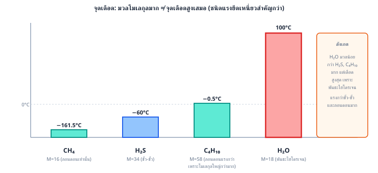
1 ขั้นที่ 1: ตามแนวโน้มแรงลอนดอน สารมวลโมเลกุลมากกว่า () ควรมีจุดเดือดสูงกว่า () แต่ผลกลับตรงข้าม แสดงว่า มีแรงชนิดพิเศษเพิ่มเข้ามา
2 ขั้นที่ 2: มีพันธะ N−H โดยตรง (H เกาะกับ N ซึ่งเป็นหนึ่งใน N, O, F) จึงเกิด พันธะไฮโดรเจน ระหว่างโมเลกุลได้ ส่วน มี H เกาะกับ P ซึ่ง EN ต่ำเกินไป (ใกล้เคียง H) จึงเกิดพันธะไฮโดรเจนไม่ได้ มีเพียงแรงไดโพล-ไดโพลอ่อน ๆ กับแรงลอนดอน
ระวัง (ที่มาของตัวลวง)
คำตอบคือ เกิดพันธะไฮโดรเจนระหว่างโมเลกุลได้ แต่ เกิดไม่ได้
ตอบ: ข้อ ข. เกิดพันธะไฮโดรเจนระหว่างโมเลกุลได้ แต่ เกิดไม่ได้
ข้อ 47 — ตอบ ก.
โคเวเลนต์ไม่มีขั้ว, โคเวเลนต์มีขั้ว, ไอออนิก
หลักการ: คำนวณ ของแต่ละพันธะ แล้วเทียบกับเกณฑ์ = ไม่มีขั้ว, – = มีขั้ว, = ไอออนิก
คำนวณทีละพันธะ
สรุปตามลำดับที่โจทย์ถาม (C–H, N–H, Na–Cl): โคเวเลนต์ไม่มีขั้ว, โคเวเลนต์มีขั้ว, ไอออนิก
ที่มาของตัวลวง: ตัวเลือกอื่นๆ เกิดจากการคำนวณ ผิดพลาดหรือจำเกณฑ์ตัวเลขสลับช่วงกัน
คำตอบคือ โคเวเลนต์ไม่มีขั้ว, โคเวเลนต์มีขั้ว, ไอออนิก
ตอบ: ข้อ ก. โคเวเลนต์ไม่มีขั้ว, โคเวเลนต์มีขั้ว, ไอออนิก
ข้อ 48 — ตอบ ก.
โมเลกุลน้ำที่มีขั้วล้อมรอบไอออน และ ด้วยแรงไอออน-ไดโพล ซึ่งชดเชยพลังงานแลตทิซที่ต้องสลายได้
หลักการ: เมื่อผลึกไอออนิกละลายน้ำ โมเลกุลน้ำ (มีขั้ว) จะเข้าล้อมรอบไอออนแต่ละตัว โดยด้าน (ออกซิเจน) หันเข้าหาไอออนบวก และด้าน (ไฮโดรเจน) หันเข้าหาไอออนลบ เรียกกระบวนการนี้ว่า ไฮเดรชัน (hydration) ซึ่งเกิดจาก แรงไอออน-ไดโพล
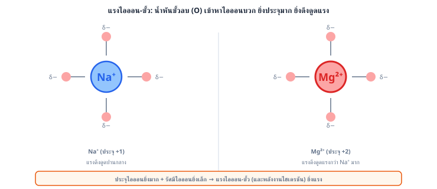
แรงไอออน-ไดโพลแรงกว่าแรงไดโพล-ไดโพลธรรมดามาก เพราะไอออนมีประจุเต็มหน่วย ไม่ใช่ประจุย่อยแบบขั้วโมเลกุล พลังงานที่คายออกจากการเกิดไฮเดรชันนี้ชดเชยพลังงานแลตทิซที่ต้องใช้สลายโครงผลึกได้เพียงพอ ทำให้ ละลายน้ำได้
ที่มาของตัวลวง
คำตอบคือ โมเลกุลน้ำที่มีขั้วล้อมรอบไอออน และ ด้วยแรงไอออน-ไดโพล ซึ่งชดเชยพลังงานแลตทิซที่ต้องสลายได้
ตอบ: ข้อ ก. โมเลกุลน้ำที่มีขั้วล้อมรอบไอออน และ ด้วยแรงไอออน-ไดโพล ซึ่งชดเชยพลังงานแลตทิซที่ต้องสลายได้
ข้อ 49 — ตอบ ก.
ลอนดอน < ไดโพล–ไดโพล < ไอออน–ไดโพล
หลักการ: ความแรงของแรงยึดเหนี่ยวขึ้นกับขนาดประจุที่เกี่ยวข้อง
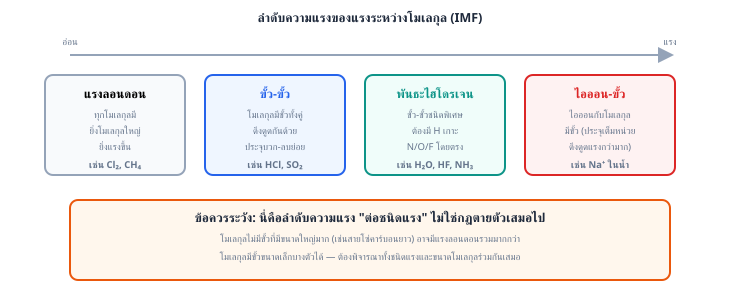
สรุป: ลอนดอน < ไดโพล–ไดโพล < ไอออน–ไดโพล
ที่มาของตัวลวง: ตัวเลือกอื่นสลับลำดับผิด มักมาจากความสับสนว่าแรงลอนดอนสะสมได้มากในโมเลกุลใหญ่จึงคิดว่าแรงกว่าเสมอ แต่โจทย์นี้เปรียบเทียบ "กรณีทั่วไป" ตามชนิดของแรง ไม่ได้เจาะจงขนาดโมเลกุล
คำตอบคือ ลอนดอน < ไดโพล–ไดโพล < ไอออน–ไดโพล
ตอบ: ข้อ ก. ลอนดอน < ไดโพล–ไดโพล < ไอออน–ไดโพล
ข้อ 50 — ตอบ ก.
แรงกว่า เพราะ มีประจุมากกว่า
หลักการ: ความแรงของแรงไอออน-ไดโพลขึ้นกับ ขนาดประจุของไอออน เป็นหลัก (คล้ายกับหลักการที่ใช้เทียบพลังงานแลตทิซ) ประจุยิ่งมาก แรงดึงดูดกับขั้วของโมเลกุลน้ำยิ่งแรง
นำมาใช้กับโจทย์: มีประจุ ในขณะที่ มีประจุ เท่านั้น ดังนั้นแรงไอออน-ไดโพลระหว่าง กับโมเลกุลน้ำจึงแรงกว่า (สอดคล้องกับข้อเท็จจริงที่ไอออนประจุสูงถูกล้อมรอบด้วยโมเลกุลน้ำแน่นและแรงกว่าไอออนประจุต่ำ)
ที่มาของตัวลวง
คำตอบคือ แรงกว่า เพราะ มีประจุมากกว่า
ตอบ: ข้อ ก. แรงกว่า เพราะ มีประจุมากกว่า
ข้อ 51 — ตอบ ค.
เงื่อนไขการเกิดพันธะไฮโดรเจน: โมเลกุลต้องมีอะตอม H ที่ สร้างพันธะโดยตรง กับ N, O หรือ F (เกิดขั้ว ที่ H แรงมาก) และมีอะตอม N, O, F ที่มีคู่โดดเดี่ยวไว้รับ
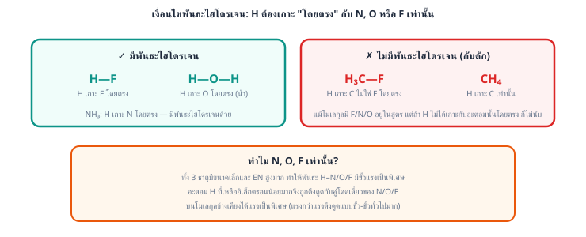
วิเคราะห์ทีละตัวเลือก
คำตอบคือ
ตอบ: ข้อ ค.
ข้อ 52 — ตอบ ง.
, ,
หลักการ: โมเลกุลจะมีขั้วเมื่อ (1) มีพันธะมีขั้ว และ (2) รูปร่างโมเลกุลไม่สมมาตร ทำให้ไดโพลโมเมนต์ของแต่ละพันธะหักล้างกันไม่หมด
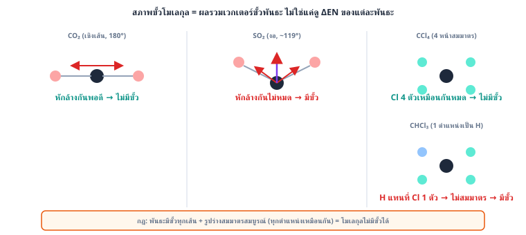
ตรวจชุดที่ถูกต้องทีละโมเลกุล
เหตุใดชุดอื่นจึงผิด (มีโมเลกุลไม่มีขั้วปนอยู่)
คำตอบคือ ชุด , ,
ตอบ: ข้อ ง. , ,
ข้อ 53 — ตอบ ค.
ก และ ค
หลักคิด: วิเคราะห์แรงระหว่างโมเลกุลของแต่ละคู่สาร — พันธะไฮโดรเจนชนะแรงลอนดอนเมื่อมวลใกล้กัน, ภายในอนุกรมที่ไม่มีพันธะไฮโดรเจนให้ใช้แรงลอนดอนตามขนาด, และการละลายใช้หลัก "like dissolves like"
1 ขั้นที่ 1: ตรวจ (ก) — ถูกต้อง HF มีพันธะ H−F โดยตรง (F เป็นธาตุ EN สูงสุด) จึงเกิดพันธะไฮโดรเจนที่แข็งแรงมาก ส่วน HCl เกิดไม่ได้ มีเพียงไดโพล-ไดโพลกับลอนดอน จุดเดือด HF ( องศาเซลเซียส) จึงสูงกว่า HCl ( องศาเซลเซียส) แบบผิดแนวโน้มมวล
2 ขั้นที่ 2: ตรวจ (ข) — ผิด เมทานอลมีหมู่ O−H ที่มีขั้วแรงและเกิดพันธะไฮโดรเจนกับน้ำได้โดยตรง จึงละลายใน น้ำ ได้ดีมาก (ผสมเป็นเนื้อเดียวทุกสัดส่วน) ส่วนเฮกเซนไม่มีขั้ว เข้ากับหมู่ O−H ไม่ได้ — ข้อความนี้กลับด้านหลัก like dissolves like
3 ขั้นที่ 3: ตรวจ (ค) — ถูกต้อง HCl, HBr, HI ไม่มีพันธะไฮโดรเจน (Cl, Br, I ตัวใหญ่ EN ไม่พอ) แรงเด่นคือแรงลอนดอนซึ่งเพิ่มตามจำนวนอิเล็กตรอน: HCl (18 อิเล็กตรอน) < HBr (36) < HI (54) จุดเดือดจึงเรียงเพิ่มตาม แม้สภาพขั้วจะ ลดลง จาก HCl ไป HI ก็ตาม (แรงลอนดอนเป็นปัจจัยเด่นกว่าไดโพลในอนุกรมนี้)
ระวัง: ผู้ที่เลือก "ก ข และ ค" มักท่องว่าสารอินทรีย์ละลายในตัวทำละลายอินทรีย์เสมอ — ต้องดูหมู่ฟังก์ชัน: เมทานอลโซ่คาร์บอนสั้น สมบัติถูกครอบด้วยหมู่ O−H จึงเข้ากับน้ำ ส่วนผู้ที่ตัด (ค) ทิ้งมักคิดว่าสภาพขั้วที่ลดลงต้องทำให้จุดเดือดลด — ลืมเทียบน้ำหนักระหว่างแรงไดโพลกับแรงลอนดอน
คำตอบคือ ก และ ค
ตอบ: ข้อ ค. ก และ ค
ข้อ 54 — ตอบ ค.
ผลึกโคเวเลนต์โครงร่างตาข่าย
หลักคิด: ประเภทของผลึกดูจาก "อนุภาคที่จุดแลตทิซคืออะไร และยึดกันด้วยแรงชนิดใด"
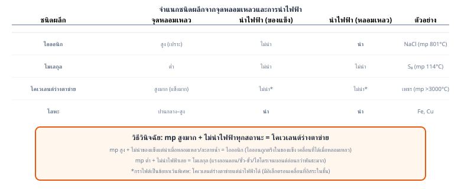
1 ขั้นที่ 1: ในเพชร อะตอม C แต่ละอะตอมสร้างพันธะโคเวเลนต์กับ C ข้างเคียง 4 อะตอมเป็นทรงสี่หน้า ต่อเนื่องกันทั่วทั้งผลึกโดยไม่มีขอบเขตโมเลกุล → เป็น ผลึกโคเวเลนต์โครงร่างตาข่าย (covalent network solid) ทั้งก้อนเปรียบเสมือนโมเลกุลยักษ์หนึ่งโมเลกุล
2 ขั้นที่ 2: สมบัติที่ตามมา: จุดหลอมเหลวสูงมาก (การหลอมต้องสลายพันธะโคเวเลนต์จริง ๆ) แข็งมาก และไม่นำไฟฟ้า (อิเล็กตรอนทุกตัวถูกใช้สร้างพันธะหมด)
ระวัง (ที่มาของตัวลวง)
คำตอบคือ ผลึกโคเวเลนต์โครงร่างตาข่าย
ตอบ: ข้อ ค. ผลึกโคเวเลนต์โครงร่างตาข่าย
ข้อ 55 — ตอบ ข.
เวเลนซ์อิเล็กตรอนไม่ยึดติดกับอะตอมใดอะตอมหนึ่ง สามารถเคลื่อนที่ได้อย่างอิสระทั่วทั้งโครงผลึก
แบบจำลองทะเลอิเล็กตรอน (electron sea model)
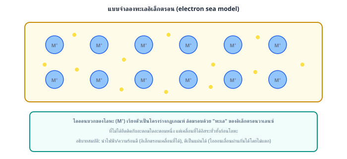
พันธะโลหะเกิดจากไอออนบวกของโลหะเรียงตัวเป็นโครงผลึก โดยมีเวเลนซ์อิเล็กตรอนที่หลุดออกมาเป็นอิเล็กตรอนอิสระ (delocalized electrons) เคลื่อนที่ไปมาได้ทั่วทั้งก้อนโลหะ เปรียบเสมือน "ทะเลอิเล็กตรอน" ล้อมรอบไอออนบวก
ขั้นการวิเคราะห์
เหตุใดตัวเลือกอื่นจึงผิด
ตอบ: ข้อ ข. เวเลนซ์อิเล็กตรอนไม่ยึดติดกับอะตอมใดอะตอมหนึ่ง สามารถเคลื่อนที่ได้อย่างอิสระทั่วทั้งโครงผลึก
ข้อ 56 — ตอบ ค.
ขั้นที่ 1: เขียนสมการโมเลกุลและระบุตะกอนจากกฎการละลาย
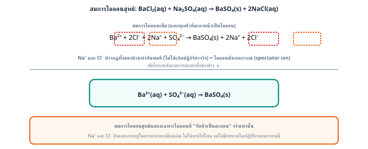
กฎการละลาย: เกลือซัลเฟตส่วนใหญ่ละลายน้ำได้ ยกเว้นซัลเฟตของ , (และของ ละลายได้น้อย) → ตะกอนสีขาวคือ ส่วน ละลายน้ำได้ดี
ขั้นที่ 2: แตกสารที่ละลายน้ำ (aq) เป็นไอออน — ได้สมการไอออนิกสมบูรณ์
(ตะกอน ไม่แตกเป็นไอออนเพราะเป็นของแข็ง)
ขั้นที่ 3: ตัดไอออนผู้ชม (spectator ions) ที่ปรากฏเหมือนกันทั้งสองข้าง คือ และ เหลือ
ที่มาของตัวลวง
ตอบ: ข้อ ค.
ข้อ 57 — ตอบ ข.
ก และ ค
กฎการละลายที่ใช้ตัดสิน
วิเคราะห์ทีละคู่ (สลับคู่ไอออนแล้วดูว่าคู่ใหม่ละลายหรือไม่)
(ก) : คู่ใหม่คือ กับ → เป็นข้อยกเว้นของคลอไรด์ เกิดตะกอนสีขาว
(ข) : คู่ใหม่คือ กับ → ทั้งคู่เป็นเกลือของโลหะหมู่ IA ละลายน้ำได้หมด ไม่เกิดตะกอน (ไอออนทุกตัวเป็นไอออนผู้ชม ไม่มีปฏิกิริยาเกิดขึ้นจริง)
(ค) : คู่ใหม่คือ กับ → เป็นข้อยกเว้นของไอโอไดด์ เกิดตะกอนสีเหลือง
สรุป: เกิดตะกอนเฉพาะ (ก) และ (ค)
ตัวลวง: ผู้ที่เลือก "ก ข และ ค" มักคิดว่าผสมสารละลายสองชนิดแล้วต้องเกิดปฏิกิริยาเสมอ แท้จริงถ้าคู่ไอออนใหม่ละลายได้หมดจะไม่มีปฏิกิริยาเกิดขึ้น
ตอบ: ข้อ ข. ก และ ค
ข้อ 58 — ตอบ ง.
สารประกอบไอออนิก
วิเคราะห์สมบัติทีละข้อ
สมบัติทั้งสามข้อตรงกับ สารประกอบไอออนิก พอดี (เช่น ซึ่งมีจุดหลอมเหลวประมาณ 801 องศาเซลเซียส)
เหตุใดสารโคเวเลนต์โครงร่างตาข่ายจึงผิด: แม้จุดหลอมเหลวจะสูงมาก (เช่นเพชร ประมาณ 3550 องศาเซลเซียส) แต่ไม่นำไฟฟ้าทั้งในสถานะของแข็ง ของเหลว และไม่ละลายน้ำ (ยกเว้นแกรไฟต์ที่นำไฟฟ้าได้ในสถานะของแข็งซึ่งก็ไม่ตรงกับโจทย์)
คำตอบคือ สารประกอบไอออนิก
ตอบ: ข้อ ง. สารประกอบไอออนิก
ข้อ 59 — ตอบ ก.
แกรไฟต์นำไฟฟ้าได้เพราะคาร์บอนแต่ละอะตอมสร้างพันธะเพียง 3 พันธะ เหลืออิเล็กตรอน 1 ตัวที่เคลื่อนที่ได้อิสระภายในระนาบชั้น
หลักคิด: เทียบโครงสร้างสองอัญรูป — เพชร: C ทุกอะตอมสร้าง 4 พันธะเป็นโครงสามมิติ, แกรไฟต์: C แต่ละอะตอมสร้าง 3 พันธะเป็นระนาบชั้น เหลือเวเลนซ์อิเล็กตรอน 1 ตัวต่ออะตอม
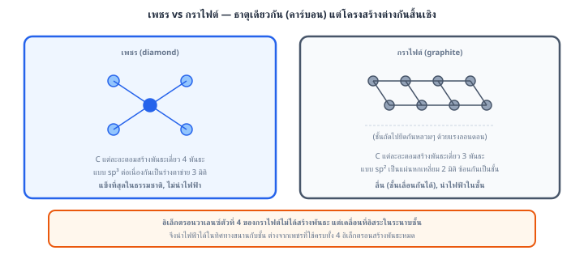
1 ขั้นที่ 1: วิเคราะห์ตัวเลือกที่ถูก ในแกรไฟต์ C มีเวเลนซ์อิเล็กตรอน 4 ตัว ใช้สร้างพันธะกับเพื่อนบ้านในระนาบเพียง 3 ตัว อิเล็กตรอนตัวที่ 4 ของทุกอะตอมไม่ยึดติดกับพันธะใดพันธะหนึ่ง (delocalized) เคลื่อนที่ได้ทั่วระนาบชั้น → แกรไฟต์จึง นำไฟฟ้าได้ ทั้งที่เป็นอโลหะ (และเป็นเหตุให้ใช้ทำขั้วไฟฟ้า)
2 ขั้นที่ 2: หักล้างตัวเลือกอื่น
ระวัง: "นำไฟฟ้าได้" ไม่ใช่สมบัติผูกขาดของโลหะ — เกณฑ์จริงคือมีอนุภาคพาประจุที่เคลื่อนที่ได้ (อิเล็กตรอนอิสระหรือไอออนอิสระ)
คำตอบคือ ตัวเลือกแรก
ตอบ: ข้อ ก. แกรไฟต์นำไฟฟ้าได้เพราะคาร์บอนแต่ละอะตอมสร้างพันธะเพียง 3 พันธะ เหลืออิเล็กตรอน 1 ตัวที่เคลื่อนที่ได้อิสระภายในระนาบชั้น
ข้อ 60 — ตอบ ข.
การละลายดูดพลังงานสุทธิ kJ/mol อุณหภูมิของสารละลายจึงลดลงเล็กน้อย
หลักคิด: พลังงานของการละลาย = พลังงานสลายโครงผลึก (ดูด, เครื่องหมายบวก) + พลังงานไฮเดรชัน (คาย, เครื่องหมายลบ) ตามกฎของเฮสส์ — ตัวไหนใหญ่กว่าเป็นตัวชี้ว่าสุทธิดูดหรือคาย
1 ขั้นที่ 1: รวมพลังงานสองขั้น
2 ขั้นที่ 2: ตีความเครื่องหมาย ค่าเป็น บวก → การละลายโดยรวม ดูดพลังงาน จากสิ่งแวดล้อม (คือดูดจากน้ำรอบ ๆ) อุณหภูมิของสารละลายจึง ลดลง เล็กน้อย — สอดคล้องกับเกลือหลายชนิด (เช่นเกลือแกง) ที่ละลายแล้วน้ำเย็นลงเล็กน้อย
3 ขั้นที่ 3: เกลือดูดพลังงานแล้วยังละลายได้หรือ ได้ — เมื่อพลังงานสุทธิดูดเพียงเล็กน้อย การละลายยังเกิดขึ้นได้เพราะการกระจายตัวของไอออนในน้ำเพิ่มความไม่เป็นระเบียบของระบบ (ปัจจัยเรื่องการจัดเรียงอนุภาค) จึงห้ามสรุปว่า "ดูดพลังงาน = ไม่ละลาย"
ระวัง (ที่มาของตัวลวง)
คำตอบคือ การละลายดูดพลังงานสุทธิ kJ/mol อุณหภูมิของสารละลายจึงลดลงเล็กน้อย
ตอบ: ข้อ ข. การละลายดูดพลังงานสุทธิ kJ/mol อุณหภูมิของสารละลายจึงลดลงเล็กน้อย